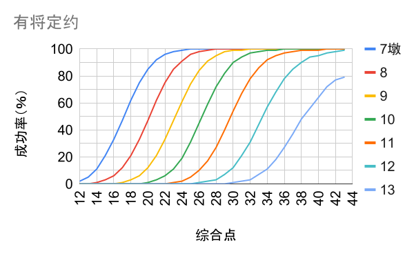

**无将应叫逼局体系** —— 顾名思义，也就是一阶花色开叫后应叫1NT或者2NT都逼叫到局。具体地说，1NT应叫表示有实力但不承诺配合，而2NT应叫表示有实力也有配合。此叫牌方法也可以被称作无将盖一逼局，亦或N盖一逼局，以对照广为人知的二盖一逼局。
本体系的目标是简单、有效和自然。简单就是降低复杂度，减少记忆量。有效就是绝大多数牌都能叫到最佳定约。自然就是尽量采用自然叫牌，减少约定叫的使用。以下阐述能够达到这些目标的若干重要的设计原则。
用计点法来较为准确地衡量一手牌或是联手的实力，尽量给所有的叫牌都赋予一个确定的数值范围。对于无将定约以通用的大牌点估算牌力，对于有将定约则采用基于大牌点调整之后的综合点。比如1NT开叫表示12-15个大牌点的均型牌，之后超级接受同伴的转移表明至少17个综合点，同伴在持9个综合点时达到联手26个综合点的进局实力。由于加叫长度也被数值化为综合点的一部分，加叫时只需要显示综合点而不必显示长度，从而极大地简化了加叫结构。
一个好的计点法在大多数情况下都能给叫牌做出准确的指导，当然计点法也不应该被盲目地使用，必要时本体系也采用一手输张减去另一手掩护张的计算法，特别是当拿到畸型牌时。
开叫、应叫以及叫牌的展开都应该快速地把牌力和牌型限制在一个确定的和较小的范围，大多数情况下可以把联手实力限制在2点范围。一阶花色开叫表示13到22个综合点（通常11到19个大牌点），范围比较大，但好处是快速出套可以抗干扰。接下来无配合的应叫快速地把实力划分为极弱牌（不叫）、不逼局牌和逼局牌三个区间，后续叫牌空间充足，尽可以自然叫。而有配合的应叫则分为极弱牌（不叫）、弱牌、邀局牌和逼局牌四个区间，尽快找到最佳阶次。
一阶花色开叫后，1NT应叫表示逼局牌力，而一盖一和二盖一都代表低于逼局的牌力，充分体现了限制性应叫。当我方联手已经有进局的牌力，敌方干扰的可能性减小而我方抗干扰的能力增强，延迟显示牌型也没有什么损失。一来敌方已难以阻止我方进局；二来敌方的干扰让我方知道危险在哪里，为坐庄提供额外的信息；当成局希望不大时，我方还可以选择惩罚敌方。当应叫人不能逼局时，我方牌力减弱而敌方牌力增强，敌方更可能参与争叫。比起不逼局的1NT应叫，不逼局的二盖一让我方尽快出套，可以先于敌方找到配合并在竞争叫牌中取得优势。
1NT应叫逼局是本体系最关键的特征，和二盖一逼局相比反其道而行之。本体系因此而得名，因此而简化。如果第一应叫不能区分逼局牌和非逼局牌，随着叫牌的展开，只会有更多的序列需要这样的区分，体系就变得非常复杂而难以掌握，使用起来也容易出错。二盖一逼局能够区分一些逼局牌和非逼局牌，但是做得还不够彻底，而1NT应叫逼局是百分百地让所有逼局牌都能立即逼局。之后在应叫特点和对比二盖一逼局体系两节中还有更具体的比较。
关于速达原则可能会有一些误解，速达的应该是意图而不是叫牌的阶次，两者有时候是相同的但更多的时候是不同的。比如同伴正常开叫了，而你也持有一手能够正常开叫的好牌，那么就应该尽快把成局的意图传达给同伴，但是在尚未确定是打有将定约还是无将定约时，应该在成局以下叫牌以保留多个选择。意图速达和限制性叫牌是完全一致的，越是限制性的叫牌越能够清楚地传达意图。举例如下。
同伴开叫5张♥，应叫人以1NT立即表明成局的意愿，是意图速达原则的体现。应叫人第二轮简单加叫3♥是意图上的速达而不是阶次上的速达，给同伴留下了足够的空间来探索满贯。如果应叫人因为自己是低限而在阶次上速达4♥，开叫人就进退两难了，直接问关键张要担心没有♦控制，止步4♥又不甘心。如果应叫人是高限，第二轮则可以扣叫3♠立即表明满贯兴趣，这也是意图上的速达而不是阶次上的速达。
因为跳叫剥夺了大量的叫牌空间，所以其显示的牌型和牌力应该是极为限制性的。与经典的叫牌方法有所不同，本体系的跳叫在绝大多数情况下都是为了显示配合或独立将牌。例如1H开叫之后，2H及其以上的应叫都表示有H配合的加叫，不同的加叫方式还能够区分加叫点力以及是否有单缺，以更准确地评估联手实力。在还没有找到配合时，跳叫或多或少都有阻击同伴的嫌疑，还是放慢脚步为好。
同伴之间无论哪一方做了叫牌，另一方都可以采用同样的方式续叫表示联手牌力和牌型。对称叫牌极大地降低了体系的复杂度，减少了记忆量。比如对称加叫结构中的叫牌序列 1♥-2NT 和 1♦-1♥;2NT 以及 1♣-1♦;1♥-2NT 都表示对红心的进局加叫并且没有单缺。又比如对称强1NT再叫中 1♥-1♠;1NT 和 1♦-1♥;1♠-1NT 同样都是表明至少有邀局实力的高限牌。再比如强2♣开叫后，2♣-2♥ 和 2♣-2♦;2♥ 都表示有5张♥，之后的叫品在两个序列中都表示相同的联手实力。
弱无将开叫是实现对称叫牌的关键。因为1NT开叫表示12-15个大牌点的均型牌，开叫人的1NT再叫就可以表示16-19个大牌点，释放了的2NT再叫被用于人工逼局加叫。
叫牌既传递信息给同伴也传递信息给敌方，太少的信息会让同伴迷惑，太多的信息会让敌方做出准确的防守，因此要找到两者之间的平衡点。
本体系的处理方法是：成局的牌尽量避免透露信息给敌方，只是基于牌点的计算做简单的邀叫，而不做长套或短套试探叫。爆裂叫和扣叫是探索满贯的起点，以更多的信息换取更精确的满贯叫牌是值得的。
强牌做庄可以隐藏更多的大牌，敌方首攻时更容易攻入隐藏的嵌张结构，或者隐藏的次级大牌能够得到更好的保护。
转移叫是让强牌做庄的有效手段。本体系对1♣开叫采用4张套三路转移应叫，尽量让开叫人持强均型牌时做庄，并且在一阶上就能找到高花4-4或5-3配合。此外对1NT开叫采用5张套四路转移，对2NT开叫采用5张高花转移，对2♣强开叫也有6张套四路转移逼局。
当有配合时尽快加叫，但是在5-3配合时要保留找到更好的4-4配合的空间，特别是有满贯价值的牌，5-3配合的边花可能产生额外的垫牌和将吃的机会。例如应叫人延迟3张加叫，先以1NT逼局，有助于探查第二套4-4配合。
基于一百万副牌双明手结果的统计，有46.7%的牌至少四位牌手中的一位能够打成局但没有满贯，有13.7%的牌至少四位牌手中的一位能够打满贯（包含3.0%的大满贯牌）。
在仅能成局的牌中，59.4%可以打3NT，70.5%可以高花成局，26.5%可以低花成局，其百分比之和大于100%是因为很多牌能以多种方式成局。如果考虑只能以一种方式成局，19.1%的牌只能打3NT成局，29.7%的牌只能打高花成局，而只有4.6%的牌是只能打低花成局的。很明显，高花成局和无将成局比低花成局重要得多。
在有满贯的牌中，40.7%可以打无将，65.5%可以打高花，65.1%可以打低花。只能以一种方式打满贯时，1.4%是靠无将，23.4%是靠高花，23.3%是靠低花。所以花色满贯比无将满贯重要得多，而高花满贯和低花满贯同样重要。
本体系优先寻找高花配合，也给低花满贯足够的重视。比如应叫人持一套高花和一套低花时，即使高花较短也先应叫高花。低花成局定约通常让位于无将成局定约，除非是缺乏足够的止张。当联手达到满贯实力时，采用低花木关键张问叫使得低花满贯探索有足够的空间。
经典的4NT关键张问叫用在高花上很有效，但是用在低花上则因为空间不足而容易冒叫。反冲问叫能够解决空间不足的问题，但是有时会混淆自然叫牌和关键张问叫而导致叫牌事故。
本体系的方法是：保留4NT作为高花将牌时的关键张问叫，而4♣和4♦分别是以♣和♦为将牌的低花木关键张问叫。这样既解决了低花满贯问叫空间不足的问题，又避免了反冲问叫所带来的混淆，而付出的代价仅是无法以4♣和4♦这两个叫品邀请低花成局。
自然叫牌设计中常遇到的一个问题是：四个花色叫牌应该保证的怎样的长度才不至于产生矛盾？比如标准的自然开叫5张高花和3张低花，四个花色保证的张数之和是5+5+3+3=16。那么应叫呢？
5张高花开叫体系中，对1♠开叫应叫2♠保证3张，2♥保证5张，2♣和2♦都保证4张，四个花色保证的张数之和是3+5+4+4=16，即使不定义1NT应叫也没有任何矛盾。如果不能加叫♠也不能应叫低花，那么♥就至少有13-2♠-3♦-3♣=5张。如果不能应叫新花，那么♠就有13-4♥-3♦-3♣=3张，可以加叫。其它情况类推。这种四个花色叫牌保证的张数之和为16的设计称为16-法则。
再看一下4张高花开叫体系，如果对1♠开叫应叫2♠保证4张，2♥保证5张，2♣和2♦都保证4张，那么四个花色保证的张数之和是17就会出问题：持3=4=3=3牌型无法应叫。需要的改动是遵循16-法则（比如让2♥只保证4张），或加入1NT涵盖3=4=3=3牌型。
本体系花色叫牌的设计遵循16-法则，并把无将叫牌用于显示与花色叫牌不同的实力。
一个好的叫牌体系必须以一个好的牌力估算方法为基础。大牌点计算法已被广泛接受，实际应用和双明手分析都表明4-3-2-1大牌点对无将定约的估算是既简单又准确，所以没有必要另起炉灶。打有将定约则增加牌型点，通常考虑长套、短套和将牌的配合程度，并没有统一的标准。下面的方法对有将定约的估算做了重要改进，使其更准确和易用。
**大牌点** —— A=4点、K=3点、Q=2点、J=1点，用于评估无将定约。
**综合点** —— 在大牌点基础上做以下调整，用于评估有将定约。
例如这手牌有12个综合点：♠ KQ76 ♥ K3 ♦ KT976 ♣ J6，其中12个大牌点，C双张J6减1点，没有A减1点，两个双张加2点。在同伴开叫1S后，这手牌有额外的一张将牌，在边花有双张时加1点，增值到13个综合点。
综合点的计算对庄家和明手都适用，不必区分谁是庄家谁是明手。控制点提高了A在有将定约中的价值，相当于5-3-2-1计点并保持整副牌40点，而且一眼就可以看出控制点的个数。短套点的价值固定，不为将牌的配合长度而改变。将牌点只在找到配合后为额外的将牌添加。比如持3张将牌就能加叫而你有4张，这额外的将牌在边花有单缺时值2点、有双张时值1点、否则就值0点（4-3-3-3牌型）。类似地持5张套就能开叫而你实际有6张，在同伴做了3张加叫后，那额外的第6张将也要添加将牌点。如此计算牌型点的好处是保证了精度而且不需要确切知道同伴有几张将牌，相应的叫牌简化是加叫时不必把张数传递给同伴，因为张数信息已经融合于综合点之中，只要传递综合点就可以了。
通过双明手分析得到点力和做成定约的概率关系如下两图所示。以24个大牌点做3NT的成功率是42%，25点则提高成功率到62%。以26个综合点做4高花的成功率是45%，27点则提高成功率到59%。
以40%成局，50%小满贯和70%大满贯为界，做成定约的点力要求如下表。有29个大牌点或者30个综合点即可以试探满贯，比如确认联手有足够的A或控制，即使试探失败也可以比较安全地停在四阶或者五阶。当一方因牌力太弱而缺乏进手，联手就需要更高的点力来完成定约，比如2NT开叫表明20-21点，应叫人最好有5点以上才叫上3NT。
另外一个关键问题是如何在基于无将定约的估算和基于有将定约的估算之间进行转换。比如拿着一手牌以20法则开叫没找到配合，那么这手牌打无将该算几点？本体系的方法是：开叫时均型牌计算大牌点，非均型牌计算综合点，一旦找到配合双方都计算综合点，没有配合就都计算大牌点。非均型牌的大牌点通常少于综合点，平均估计弱开叫时少1点，正常开叫时少2点，强开叫时则少3点。12-19均型牌的综合点按大牌点加1点估计，20+均型牌的综合点按大牌点加2点估计。
随着叫牌过程的展开，对一手牌的描述越来越细致，每一声叫牌都传达一些额外的信息，有时描述牌型，有时描述牌力，或者二者兼而有之。通常把一手牌的实力一分为二，强者称为高限，弱者称为低限，以接下来的叫牌区分高限和低限。在此过程中，高限或低限的概念是相对的和动态的，其范围因为被后续叫牌限制而不断地缩小。
以一阶花色开叫后应叫人的牌为例，第一声叫牌可以划分为高限12+和低限6-11。如果是高限12+，后续叫牌可以区分新的高限16+和低限12-15。如果是低限6-11，后续叫牌区分的则是新的高限10-11和低限6-9。假定应叫人的牌已经被限定在6-9，那么此时的高限就是8-9，而低限则是6-7。
有时叫牌也可以分为三个区间：高限、中高限和低限。比如开叫人的一阶花色开叫表示12-19，在同伴二盖一应叫之后，开叫人的再叫可以区分高限18-19，中高限16-17和低限12-15。
输张计算法同时考虑大牌和牌型，适合于有将定约，特别是将牌较长或大部分牌力集中在一手牌时。
每门花色从大到小排序，前三张里只要有不是AKQ之一的牌都是输张，所以每门花色最多三个输张。比如：KQJxx有一个输张、Axx有两个输张、xxxx有三个输张。单张K和双张Qx分别算一个和两个输张，除非同伴以实套叫过该花色。例如这手牌♠ AK2 ♥ Q9852 ♦ Q ♣ T943有七个输张：S一个、H两个、D一个、C三个。和输张相对应的是赢张，上面的七个输张的牌反过来就是六个赢张的牌。当然这些输张和赢张都不是绝对的，仅仅是估算，最终是输还是赢取决于同伴的配合甚至整个打牌的过程。
手里有输张就得靠同伴的赢张来消除，常见的消除方式有：大牌赢张、将吃赢张、长套赢张。比如同伴持♠ Q874 ♥ AK4 ♦ A532 ♣ AJ就可以为前面那手牌消除至少六个输张：五个大牌赢张加一个C将吃赢张，如果S三三分配的话再加一个长套赢张，所以这两手牌配合起来可以考虑打满贯。需要注意的是长套赢张并不总是能够产生，比如前面那手牌的第四张C和后面那手牌的第四张D最终都没能成为赢张。为了避免重复计算长套赢张，估算联手输墩时应该用牌型好的一手牌里的输张减去牌型差的一手牌里的大牌赢张和将吃赢张，也就是说牌型差的一手牌里的长套赢张不必计算。为了方便叙述，一手牌里的大牌赢张和将吃赢张统称为掩护张。
当然把A和Q等同于一个赢张严重地低估了A而高估了Q，一个更为准确的方式是把A算一个半赢张而把Q算半个。类似地双张、单张和缺门的将吃能力各有不同，双张大约只能算半个，单张算一个，而缺门算一个半。这么一来输张估算和点力估算并没有本质的不同，只是输张估算更为直观，更接近打牌的思考过程。即便这样，输张估算的大牌价值比例和短套价值比例仍然不准，绝大多数时候还是不如综合点准确。
需要强调一下，输张和输墩是两个不同的概念，一副牌有52张和13墩，联手输张可以超过13个，但是联手输墩最多13个。相对应的赢张和赢墩也是不同的概念，联手赢张可以超过13个，但是联手赢墩最多13个。
经典的输墩计算法以魔法数24减去联手输张总数来估计联手的赢墩能力，比如联手14个输张的牌可以做高花成局定约，或是联手12个输张的牌可以打花色满贯定约。这一算法非常简单，但是有较大的误差。除了之前提到的A和Q等同的问题以及 J 被忽略的问题之外，24这个魔法数有时也不准确。如果一方持4-3-3-3牌型，25才是更准确的魔法数。下面举几个简单的例子。
两手牌都是6个输张，联手12个输张，经典的输墩计算法估计可以打小满贯。等一下，这难道不是明显的大满贯牌吗？一手牌有6个输张，另一手牌有6个大牌掩护张，联手没有输墩。
左手6个输张，右手7个输张，联手13个输张，经典的输墩计算法估计有11个赢墩。再等一下，这难道不是明显的小满贯牌吗？左手6个输张，右手有5个大牌掩护张，联手只有1个输墩。
新的输墩计算法对此进行了调整，采用了25这个魔法数，对大牌和短套的估值也更加合理。改动后的算法等价于A=1.5赢墩，K=1赢墩，Q=0.5赢墩，但是单张K和双张Q都不算赢墩；缺门=3赢墩，单张=1.5赢墩，双张=0.5赢墩；而联手的赢墩能力是所有大牌和短套的赢墩之和再加1。把赢墩数乘以2可以转换成点数：A=3点，K=2点，Q=1点，J=0点，缺门=6点，单张=3点，双张=1点，显然短套的价值被严重高估了。请看下面的例子。
经典的输墩计算法：左手5个输张，右手8个输张，估计可以拿24-5-8=11墩。新的输墩计算法：左手5个输张，右手8.5个输张，估计可以拿25-5-8.5=11.5墩。实际上联手只有不到10墩牌。当将牌只有8张并且两手都是非均型牌时，输墩计算法有高估赢墩能力的倾向。
可以看出输墩计算法的基础是以同伴的掩护张来消除手里的输张，但是为了对称性而采用了联手输张，这么一来反而走了弯路，成了一种不太准确的计点法。本体系不采用联手输张的算法，绝大多数时候用的是更准确的联手综合点，也更容易转换成大牌点；偶尔需要时，比如当一手牌非常畸型或者是至多4个输张时，则直接用另一手牌的掩护张来消除手里的输张。
叫牌结构阐述的是开叫大纲以及一阶花色开叫展开之后屡屡出现的叫牌模式。一手牌在叫过几次之后，所显示的牌型即使在不同的序列中也有相同的规律可循，同伴可以准确地判断。之前在设计原则中提到过的对称加叫结构在不同的叫牌后续中反复出现，是体系的基石之一，也是降低体系复杂度和减少记忆量的基本方法。强1NT再叫和强2NT再叫也都有显著的对称特性，是简化体系的重要工具。下面是对这些叫牌结构更具体的解说。
在之后的阐述中大牌点将不带标注而综合点以后缀z标注，其它记号一并说明如下。
均型牌开叫计算大牌点，非均型牌开叫计算综合点。正常开叫包含一阶花色和1NT，需要有成局一半的点力，两手能够正常开叫的牌通常能够成局。低于正常开叫点力时，只有非均型牌在满足条件时可以在二阶以上做阻击性的弱开叫，其它情况都不叫。远高于正常开叫点力时，开叫强2C或2NT。各种开叫的具体要求如下。
本体系在开叫上最明显的特征是5542一阶花色开叫（即5张高花、4张D和2张C）和弱无将开叫。一阶花色开叫要么是强均型牌要么是非均型牌，很容易再叫，也可以在竞争叫牌中取得优势。为什么采用5542而不是传统的5533呢？因为这样一来没有5张套的强均型牌都开叫1C，更容易通过转移应叫来寻求5-3和4-4配合，并让持强牌的开叫人成为庄家。弱无将开叫不仅简化了一阶花色开叫的后续叫牌，而且抬高了敌方争叫的门槛。二阶花色开叫（除去强2♣）限制性好而且使用频繁，兼具建设性和阻击性。以下是一些开叫的牌例。
① 这是最低限的一阶开叫：10个大牌点全部在长套上，有高花套，而且还有一个单张。如果大牌在短套上，或者没有高花套，又或者持两个双张，那么最好在二阶开叫或者不叫。
均型牌包括4-4-3-2、5-3-3-2和4-3-3-3牌型，其显示方式比较简单：0-11点不叫，12-15点开叫1NT，16-19点开叫一阶花色，20-21点开叫2NT，22点以上开叫2C。即使暂时做花色开叫，很快也能通过再叫无将来表明均型牌，这里就不细说了。
非均型牌的牌型繁多，大致可以分为单套牌、双套牌和三套牌。高阶花色开叫对牌型和牌力都有比较严格的要求，这里就只讨论一阶花色开叫后如何显示非均型牌。为了充分显示牌型，开叫人的第一次花色叫牌要求5张（除非是4-4-4-1牌型），第二次花色叫牌要求4张，第三次花色叫牌只要求3张。如果重复叫出之前叫过的花色，每重复一次，所叫花色的长度就增加一张。以下表中是针对不同牌型的叫法，其中a、b、c分别代表最长套、次长套和第三长套。如果是5-5牌型，那么总是先叫较高级别的5张套。如果是4-4-4-1牌型，那么就先叫最不占用叫牌空间的4张套。
① 除了5-4-2-2牌型，所有牌型都可以做三次花色叫牌。
② 除了4-4-4-1牌型，所有开叫花色都保证5张。
③ 只有逆叫能够显示6-5牌型，否则就只能显示5-5。
④ 只显示了6-4，除非还有一次机会叫7张套。
例如持牌♠ 6 ♥ AK54 ♦ AKT62 ♣ Q95开叫1D通常有5张，在同伴应叫2C后逆叫2H显示4张H，然后在同伴的2NT后选择3C保证3张C。在开叫人叫出了三套牌之后，第四花色上肯定是单缺。
又如持牌♠ 6 ♥ AK5 ♦ AKT642 ♣ T95开叫1D通常有5张，在同伴应叫1NT逼局后再叫2D表示6张，然后在同伴的2S后第三轮叫3H。开叫人第三轮的新花只保证3张，如果有4张的话第二轮就应该叫出来。
当然叫牌并不只是显示牌型，还要考虑牌力，不能保证每一手牌都有三次的叫牌机会，特别是拿着弱牌时。如果同伴应叫了1NT逼局，通常都有机会把牌型叫清，除非是先找到了配合。即使在非逼局进程中，只要再叫时能够以新花逼叫，就有机会叫第三次。
无论开叫人还是应叫人叫出一阶花色，同伴都可以按以下结构做出加叫，表示联手至少8张将牌配合和不同的联手实力。如此对称的加叫结构使体系得到极大的简化，减少了记忆负担。加叫时总是计算综合点，并假定同伴是最低限。
该加叫结构相当简单，原则上不用区分加叫的张数，因为综合点的计算已经包含了将牌长度。实力区间基本按照部份定约、成局定约和满贯定约来划分。能够成局的牌立即显示是否有单缺，以更准确地估算联手牌力，为下一步探索满贯做准备。
在本体系中跳叫新花不是实叫，而是显示单缺的特殊加叫，也称作小爆裂叫。跳叫新花占用了大量的叫牌空间，如果没有配合的话很容易阻击到同伴。绝大多数时候只要慢一些叫牌，就可以描述强牌好套，也就是跳叫新花实叫所描述的牌情。
爆裂加叫是显示单缺的一种特殊形式，也就是在尚未确认将牌之时，同伴的花色叫牌之后，确认以同伴的花色为将牌的一种方式。即使在将牌确认之后，某些情况下也是能够显示单缺的。显示单缺的规则以及详情请参见扣叫单缺一节。下面是对称使用小爆裂加叫的两个牌例，以彰显爆裂加叫的有效性和对称加叫的简单性。应叫人爆裂加叫之后和开叫人爆裂加叫之后两节中还有更多的牌例。
应叫人的2S是小爆裂叫，显示对同伴的H套的支持、S单缺和进局的实力。开叫人原来手里有7个输张，现在同伴可以将吃2个S输张，还有5个输张需要同伴的掩护，于是叫最便宜的无将表示仍然有进局的实力但是没有探索满贯的实力。应叫人有4个掩护张，具有探索满贯的实力，于是继续扣叫控制，并在问了关键张之后来到了小满贯。第二轮开叫人如果只有4个输张则直接扣叫3C启动满贯进程。如果把开叫人的H QJ换到S上，那么这些大牌因为对上同伴的单张而贬值，手里就还有6个输张，这样就叫3H回到将牌。
把上一牌例中的两手牌位置互换，开叫人的2S是小爆裂叫，显示对同伴的H套的支持、S单缺和进局的实力。应叫人是高限，联手超过试探满贯所需要的30个综合点，于是扣叫C控制。开叫人简单问了关键张，得知缺少一个后停在了小满贯上。应叫人也可以用上一牌例的方法算出手里有5个输张，而同伴应该至少有4个掩护张，联手有足够的实力探索满贯。不过值得注意的是，如果应叫人是均型牌，就应该反过来估计同伴的输张，再减去手里的掩护张，从而得到联手的输墩。
高花加叫之后的进程以叫牌矩阵表示如下，其中综合点代表的是联手牌力。矩阵的第一行表示当前的叫牌或者叫牌序列，矩阵的第一列表示接下来可能的叫法，行列交叉格则是该叫法所显示的牌力和牌型。例如2NT加叫之后不可以不叫；再叫将牌或3NT都显示联手26-29综合点，但后者可以用来把庄位让给同伴；而叫出新花是扣叫单缺或控制，表示满贯兴趣。叫牌矩阵的好处是以最小的篇幅覆盖最多的叫牌序列，在之后的体系定义中还会被大量使用。
① 实力受损，比如拿着 Kxx 对应同伴的单张。
② 在转移应叫后可用于敦促同伴叫出将牌花色而摆正庄位。
以下是2NT人工加叫使用于应叫、开叫人的再叫、应叫人的再叫、以及开叫人的第三轮叫牌的例子，表示联手26+z并且加叫人手里无单缺。从这些牌例可以看出对称加叫结构简单而有效，之后还有更多牌例。
同伴开叫5张S，应叫人以14综合点（13大牌点）的均型牌和3张S支持做2NT逼局加叫。开叫人是低限，于是简单再叫3S，如果同伴有兴趣探索满贯，接下来可以开始扣叫控制。不过应叫人也是低限，所以简单加叫到局。
应叫人转移4张♠，开叫人持有4张支持的均型牌和21综合点（19大牌点），于是做2NT逼局加叫。应叫人没有满贯意图，可以叫3S或3NT表示低限，这里选择3NT是为了把庄位让给持强牌的同伴。开叫人当然接过庄位，止叫于4S。
应叫人转移4张♠，开叫人在一阶接受表示恰好3张S。这时应叫人的牌力因为配合而增加到13综合点（11大牌点），于是做2NT逼局加叫。开叫人以高限牌扣叫4C开始探索满贯，然而同伴接下来的扣叫表明没有红花控制，联手缺两个红花A，结果只能放弃满贯。
应叫人转移4张H之后又叫出4张S，开叫人恰好也有4张S，以20综合点（19大牌点）的均型牌做2NT逼局加叫。应叫人以3S表示没有满贯兴趣，开叫人于是简单进局。
强1NT再叫总是表示至少有邀局实力的好牌，开叫人叫出来表示16-19，应叫人叫出来表示10-11。之后同伴的叫牌以成局为界，在二阶上示弱邀局，在三阶上示强逼局。以下是几个牌例。
开叫人的1NT再叫表示16-19点，因为更弱的12-15点的均型牌应该直接开叫1NT。应叫人在二阶上显示第二套示弱，开叫人也是低限只好不叫。
在开叫人的强1NT再叫后，应叫人在三阶显示第二套逼局。开叫人持有S止张，于是叫出3NT。另一种叫法是应叫人第二轮直接叫3NT，不过开叫人有可能是低花双套，这样的话5C会是更好的定约。
开叫人的一阶新花再叫显示牌型而不是牌力，应叫人的1NT再叫表示高限10-11点，在同伴的两门花色中都没有配合。于是开叫人邀请同伴进局，应叫人因没有额外的实力而拒绝。
在非逼局进程中，无论开叫人还是应叫人叫出2NT都表示有邀局的实力。开叫人的2NT再叫显示16-17点，邀请同伴有8点以上进局。应叫人的2NT再叫显示10-11点，邀请同伴14点以上进局。以下是强2NT再叫在非逼局进程中的具体牌例。
在同伴二盖一应叫后，开叫人再叫2NT显示16-17点的邀局牌，邀请同伴有8点以上进局。应叫人有不错的8点牌（含两张10），欣然接受邀请。
应叫人二盖一之后，开叫人顺叫新花的点力范围比较宽。接着应叫人叫出2NT表示10-11点的邀局牌，邀请同伴有14点以上进局。开叫人有14点和5-4红花双套作为赢墩来源，欣然接受邀请。
在逼局进程中，同伴之间无论哪一方叫出2NT都表示高限16点以上和探索满贯的兴趣，如果主动越过2NT而在三阶上叫牌则通常表示低限12-15。以下是强2NT再叫在逼局进程中的具体牌例。
同伴开叫1D后，应叫人有3张配合，但是H和C上可能有更好的4-4配合，于是不急着加叫D而是叫1NT逼局。开叫人以2NT表示高限16-19点和5-3-3-2牌型，应叫人知道并没有其它花色的4-4配合，就加叫D确认将牌。开叫人扣叫S控制（同时表明没有H控制），这正是应叫人想要的，于是问了关键张之后叫上了小满贯。
应叫人1NT逼局，开叫人显示黑花双套。此时应叫人的2NT表示高限16点以上和满贯兴趣，让同伴继续描述牌情。开叫人叫出第三套牌，所以第四花色必然单缺。应叫人的D大牌没有贬值，于是启动满贯进程并在缺少HK时止步于小满贯。
一阶花色开叫包含16-19大牌点的均型牌和13-22综合点的非均型牌。四个一阶花色开叫所保证的长度分别是5张♠、5张♥、4张♦和2张♣，符合16-法则。只有4-4-4-1单张♣的牌系统性地开叫4张♦，大约占所有1♦开叫的5%，其余95%则是至少5张♦。只有16-19点4-4-3-2双张♣的牌系统性地开叫2张♣，大约占所有1♣开叫的5%，其余95%则是至少3张♣。
均型牌的开叫相对简单，如果有5张套则开叫该套，没有5张套则开叫1♣，所以C最短的时候只有两张。以下是一些均型牌开叫的牌例。
非均型牌只有一个最长套时则开叫该套，有5-5或6-6两个等长套时开叫较高级别的花色，有三个等长套即4-4-4-1牌型通常开叫级别最低的4张套。当一个长套没有大牌带领时，可以把它当成少一张处理；反之如果一个长套有包含AK的3-4张大牌，可以把它当成多一张处理。非均型牌开叫的范围是13-22综合点，对应的大牌点通常是12-19点，偶尔也会是好的10-11点或者差的20-21点。当大牌点不足12点时，在同伴没有配合的时候打无将定约会实力不足，所以要有好的高花成局的希望才开叫一阶花色，以对冲打无将定约可能带来的损失。以下是一些非均型牌开叫的牌例。
下面对一阶花色开叫之后的进程展开深入的讨论，一共分为五大部分：应叫、开叫人的再叫、应叫人的再叫——非逼局进程、应叫人的再叫——逼局进程和后续进程。
一阶高花开叫保证5张，只要有3张支持就可以加叫。1♦开叫95%是5张以上，加叫也只要求3张。1♣开叫95%是3张以上，要有5张支持才能加叫。应叫的优先顺序通常是：加叫高花，出高花套，加叫低花，出低花套。逼局牌先以1NT逼叫，然后再叫出5张套，而不是立即出套。
下面的应叫矩阵清楚的展现了4NT以下的每个叫品的含义，其中所有2NT以上的叫品都是加叫结构的一部分。注意1C开叫之后的一盖一采用的是转移应叫，尽量让强牌坐庄；同伴如果有刚好3张则在一阶接受转移，如果有4张以上则做二阶以上的加叫，尽快找到高花4-4或5-3配合。
① 绝大多数时候至少4张♦，只有持3=3=3=4牌型时是3张♦。
从上面的叫牌矩阵可以看出，应叫人低于逼局牌力时所显示的花色长度是符合16-法则的，所以1NT可以用于逼局。例如1C开叫后应叫人在不逼局时可以显示4张S、4张H、3张D或者5张C，加起来就是16。
下面跟二盖一逼局做一个比较来说明1NT逼局的特点。
**牌力限制** —— 1NT逼局的叫法以12个大牌点为界严格区分逼局强牌和非逼局弱牌，后续叫牌因此变得简单，尽管自然叫。二盖一逼局有时拿着逼局牌却无法立即应叫逼局，需要先以一盖一过渡，然后找机会再逼局，因此一盖一必须没有上限。这也导致了一盖一的后续叫牌变得复杂，需要区分弱牌，邀局牌和逼局牌而采用诸如新低花逼叫、第四花色逼叫等人工约定。
**牌型限制** —— 1NT应叫的自然意义是均型牌，无论是1NT逼局还是二盖一逼局都给它赋予了人工的含义，可以包括非均型牌，也都是逼叫。但是，两者之间有一个重要的区别：1NT强牌逼局以后有成局线以下的充足的空间来展示牌型，而1NT弱牌逼叫却往往需要尽快停止叫牌，在局促的空间里无法充分展示牌型。所以1NT应叫不限牌型对1NT逼局的影响要小得多，只不过是延迟了牌型的展示。
**无将庄位** —— 很显然，以强牌应叫1NT比以弱牌应叫1NT更可能得到正确的无将庄位。
**普遍性** —— 无论开叫花色是什么，1NT逼局让所有逼局牌都可以立即逼局。然而二盖一逼局却缺乏这样的普遍性：1C开叫之后二盖一就完全不适用；1D开叫之后有高花套或者1H开叫之后有S套时，即使持逼局牌往往只能先叫一盖一。
这么说好像1NT逼局只有优点。应叫人拿着6点牌就二盖一，拿着12点牌就逼局，难道就没有冒叫的顾虑吗？当然有，但要看收益是否大于损失。
先看6点的二盖一。二阶花色定约有配合时只需要20个综合点就可以打，同伴开叫至少有13个综合点，加上二盖一的6点已经有19个综合点了。就算失配，敌方也不见得愿意作惩罚性加倍。如果我方连二阶花色定约都打不成，依据总墩数定律，敌方应该至少有三阶花色定约可打。更重要的是，我方积极地出套的目的是比敌方先找到配合，因此而抬高的叫牌阶次甚至有可能阻止敌方参与争叫。
下面的牌例来自于2025年USBC公开组美国1队选拔赛首轮第5节的第6副牌。东开叫1H，西应叫6-12点的1NT，结果落了下风，让南北方先找到了S配合。如果采用不逼局的二盖一，西可以直接叫出2C，东西方就能先找到配合。
同一场比赛第7节的第42副牌，叫牌起始于 1S-1NT;2C/3C，其中1NT表示不逼局的6-12点。结果有6桌叫到了4H，其它10桌却迷失了方向，最终定约五花八门，有2C、2H、2S、3C、3NT、4C，也有让敌方定约2D的。究其原因，主要是1NT之后有各种各样的约定叫，不同的队伍有不同的侧重点。下面是本体系的叫法。
应叫人没有S配合，于是叫出5张H，是不逼局的二盖一。开叫人有3张H配合，计算手中的综合点有邀局实力，加叫到3H。应叫人也计算手中的综合点，欣然以高限进局。一切都是简单的算术和自然叫牌，不需要让人迷惑的约定叫。
再看12点的逼局。之前讨论过大牌点不足12点时开叫一阶花色的条件是有好的高花成局的机会，为了成局奖分冒一点险是值得的。当开叫人只有10-11个大牌点时，应叫人以12个大牌点逼局在没有配合时是有可能导致冒叫，所以拿着差的12点也可以不逼局。不过开叫人的非均型牌可以一定程度上弥补点力的不足，以联手23个大牌点打成3NT并不罕见。
开叫人只有11个大牌点和13个综合点，唯一的亮点是有一些中间张。应叫人也只有不起眼的12个大牌点。依据双明手分析的结果，应叫人做庄的3NT有~45%的成功率。
通常有高花配合时就应当立即加叫，例外的情况是5-3配合时为了寻求更好的4-4配合而延迟加叫。需要注意的是4-4配合并不总是更好，4-4低花成局因为要多拿一墩就比不上高花5-3成局，当然太弱的4-4配合也不适合做将牌。
应叫人没有试探满贯（17+z）的实力，可能的4-4配合又是低花，所以跳加叫同伴表示邀局牌力。开叫人开叫时有13z，现在找到了配合，额外的一张将牌在边花有单缺时加2点，于是进局。这样的叫牌简洁有效，没有透露多余的信息给防守方。
应叫人推迟了♥加叫而先叫出4张♠，找到4-4配合后以再以3S加叫邀局，开叫人持高限欣然进局。应叫人只有10z，略低于邀叫实力，但是有双套配合，于是表现了更积极的姿态。由于一盖一逼叫一轮，在没有♠配合时总是能够回到♥。
应叫人持逼局牌里的高限，低花满贯亦有可能，所以叫1NT逼局，延迟对同伴开叫花色的加叫。当开叫人第二轮叫出♣套，应叫人以扣叫♦表示对♣的支持和满贯兴趣。由于开叫人并不知道有双套配合，应叫人第三轮以关键张问叫取得叫牌的主导权，之后的一系列问叫显然是探索大满贯。最后一轮开叫人以非常好的尚未显示的♦单张直接叫上大满贯，如果是♠单张也可以。这副牌如果打5-3配合的H只能拿到11墩，说明了4-4配合的优越性，以及寻找低花满贯的重要性。
即使低花有了配合，也优先叫出高花套，因为高花比低花更容易成局。如果还没有配合而且有两套牌可以应叫，那么即使高花套较短，也优先叫出高花套。
应叫人只有5点但是也只有8个输张，可望在同伴持有5个赢张时进局，所以应当叫牌。♦已经配合，不过♥成局更值得探索。
两门红花都可以用来应叫，即使高花较短也优先选择高花。虽然没有高花配合，打3NT也没什么问题。
两门黑花都可以用来应叫，即使高花较短也优先选择高花。开叫人跳加叫同伴的高花邀请进局，应叫人欣然接受。
应叫人的♠并没有得到同伴的支持，于是叫2NT邀局，开叫人以高限接受邀请。如果应叫人没有♦止张，则可以考虑叫3♣显示♣止张，让同伴来做决定。
直接加叫低花的机会并不多，通常意味着没有4张高花。
应叫人没有4张高花，简单加叫♣表示有5张支持的弱牌。开叫人好均型牌邀局，希望同伴有8点以上。应叫人有不错的中间张，如果能做出5个C赢墩加上SK就有6个，只要同伴能提供3个赢墩就能成局，可以考虑接受邀请。
应叫人因为一手无A减一点严格说来只有10z，所以系统性的应叫是加叫2♦表示7-10z。然而在低花加叫后的第一要务是寻求3NT成局而不是低花成局，同伴推算7-10z只有6-9个大牌点（比实际的11个大牌点少了2个），无法成局，可能就不叫了。加叫3♦表示11-12z，比实际多叫了1z，但传递了更准确的10-11个大牌点的信息。本例来自于BridgeWinners。
应叫人有绝好的♦配合，也有4张♠，要不要延迟加叫呢？有一个10张套边花可不一定是好事，敌方有可能首攻该边花而得到将吃，于是应叫人直接问关键张并定约小满贯。
1♦开叫之后，应叫人看到了满贯在望，如果使用2NT加叫的话，可能会错过更好的黑花4-4配合，所以应叫人叫1NT让同伴有机会叫出第二套。第二轮如果同伴叫2♦，应叫人就扣叫3♠表明配合以及满贯兴趣；如果同伴叫出2♥或2NT，应叫人就叫3♦表明自己是推迟了加叫，然后再叫出4♦问关键张表明强牌。应叫人这手牌即使没有试探满贯的实力，应叫1NT也是个好选择，找到♠配合打4♠比打3NT或5♦都更好。
叫出低花套的优先级是最低的，表明不能加叫同伴的开叫花色，也没有新的高花套可叫。
应叫人转移♦，表示没有高花4张套。开叫人再叫1NT示高限，牌型不限。应叫人4-3-3-3牌型，有足够的点力，于是直接进局。因为联手最多5张♠，有被攻穿的危险。
应叫人的二盖一不逼叫，如果开叫人是最低限12-13点可以不叫。此例开叫人有14点，如果同伴持10-11点，3NT还是有可能的，于是回到开叫花色而不是结束叫牌。不过应叫人是低限，只能不叫。
12点逼局是个概率性的指标，有时不到12点的好牌也可以逼局，有时12点也不保证能成局。在逼局进程中尚未找到配合时，无论开叫人还是应叫人的2NT都表示高限16点以上和满贯的前景；如果两手牌都没有显示高限，那么联手最多30点，还不到无将满贯的实力。在找到配合时则通过扣叫或问关键张表示高限17综合点以上；如果两手牌都没有表示高限，那么联手最多32综合点，还不到有将满贯的实力。
应叫人有独立的♥将牌和5个输张（足以开叫4♥），开叫人至少有3个掩护张，所以应当逼局而不是简单地计算大牌点。之后应叫人连续叫♥表明长度，开叫人持好牌而最终定约小满贯。
把上一手牌的花色调换一下，应叫人同样叫1NT逼局，之后再叫3♦表示至少5张和低限。开叫人看着失配的牌，并不知道同伴有独立将牌，于是以联手至少31点一举冲上6NT。
应叫人有16z，只需要同伴在两门黑花中之一有支持就能成局，所以即使大牌点不足也选择以1NT逼局，然后依次叫出黑花双套让同伴选择，成功进局。如果应叫人选择不逼局，叫法一是：1D-2C，同伴会因为持最低限而不叫；叫法二是：1D-1S;2D-3C，同伴还是会因为最低限而不叫。
逼局牌偶尔也会无法成局。第二轮应叫人如果♣有止张应当叫3NT。开叫人没有♣止张不适合叫3NT，只好为难地再叫♥，结果同伴加叫到局，定约宕一。
应叫人1NT逼局，开叫人再叫开叫花色表示6张H套。应叫人已有2张H配合，但是不妨寻找可能更好的黑花配合。开叫人第三次叫H表示7张，应叫人满贯问叫后可以数出13个赢墩，毅然登顶大满贯。
有时因为极差的将牌支持，开叫人可能以极弱的牌力在一阶应叫，希望找到更好的配合。切记极弱牌不可以应叫二盖一新花，二盖一之后的叫牌相对粗放，会停不下来。
与其让同伴在1♣上挣扎不如转移到自己的长套，居然停在了一阶上。当然结果不会总是这么美好，同伴有更好的配合就会叫3♥或2NT，定约还是要宕，但不至于像1♣那么无望。
应叫人只有3点，不叫也无可厚非，但是拿着5-5黑花却让同伴打5-0配的♥有些说不过去，于是勉强叫出1♠，打算下一轮不叫，最坏情况是同伴再叫2♥，那就自认倒霉。不过同伴回了1NT，那就继续叫2♣显示低限并让同伴在两门黑花中选择，结果比较理想地停在了2♠。
如果一手牌有机会开叫却没开叫，那么这手牌在没找到配合之前是不可能逼局的。在同伴开叫后的应叫做如下轻微改动，对整个体系没有结构性的影响。如果觉得增加了记忆负担，也可以不采纳。
应叫人虽然之前不能开叫，但是现在因为配合而加1个短套点和1个控制点，可以做逼局加叫了。开叫人是低限所以简单进局。应叫人如果忘记了新的约定而叫出2NT也无伤大雅，结果相同。
如果之前应叫人显示了配合，接下来通常是决定叫多高的定约，但在低花配合时也会寻求更容易的3NT。应叫人的实力可以是7-10z的弱牌、11-12z的邀局牌或是13+z的逼局牌，开叫人根据联手的牌力可以不叫、邀局、直接进局、亦或探索满贯。由于单缺对联手实力的影响极大，很多叫牌序列都是围绕显示单缺和调整牌力估值而展开；特别是在同伴显示了13+z的逼局牌之后，一个好的单缺可以显著降低满贯定约对大牌的要求。
如果还没有配合，应叫人要么是6-11的非逼局牌要么是12+的逼局牌。在非逼局进程中，开叫人可以加叫同伴的应叫花色，或显示自己的牌力和牌型。在持低限12-15时，开叫人的再叫不应越过二阶开叫花色，所以有时无法叫出第二套。在持高限16-19时则有更多的选择，可以逆叫（越过二阶开叫花色）、在一盖一后叫1NT、在二盖一后叫2NT/3NT、或是跳再叫开叫花色。在逼局进程中，开叫人可以自由地叫牌，如果有第二套则叫出第二套，否则再叫6张开叫花色或叫2NT表示16-19的高限平均牌。
二阶加叫显示7-10z和联手8张以上将牌配合。应叫人已经示弱，开叫人持低限不叫，持高限的目标是成局。如果双方都是高限而且配合极好，满贯也有可能，通常开叫人以扣叫单缺表示满贯兴趣。
开叫人由于第9张将牌增值2点，实力从17z增加到19z，联手至少26z，于是跳叫进局。如果牌力稍弱，开叫人可以叫3♥邀请。因为这手牌有6个输张，满贯的可能性不大，所以没有必要叫3♣报单张。
开叫人持5-5牌型只有4个输张，听到同伴的配合后叫出♦缺门为满贯探路，同时表示所越过的两门黑花都有控制。应叫人的高限牌力毫无损失，对满贯当然有兴趣。通常应叫人可以通过扣叫来回应，但是在同伴的4♦后已没有扣叫的空间，所以直接问关键张。开叫人的回答标明了4个输张的牌，应叫人有3个掩护张，停在小满贯上刚好。开叫人应该没有♠Q，有的话牌力就达到23z而会开叫2♣的。
为了避免透露信息给防守方，本体系不采用长套或短套进局试探叫。开叫人为试探满贯而叫出的单缺，恰好在同伴低限时变成了短套进局试探。（因为缺少D控制，开叫人不可以直接叫4H显示缺门，所以暂时把H当作单张处理。）应叫人的大牌没有损失，乐于进局。假如应叫人没有♣K而有♥K，那么就回到三阶将牌表示大牌贬值，实力降至成局以下，提醒开叫人要有额外的实力才可以进局。这样的叫牌可能会导致敌方发现♥配合而做牺牲叫，不过应叫人也可能是高限但是在♥上有贬值的大牌，所以敌方介入不是没有顾虑的。本例取自BridgeWinners，讨论的是开叫人如何选择一门低花做长套试探。
低花配合后，开叫人持高限准均型牌更愿意打3NT，于是叫出2NT邀请同伴进局。应叫人持均型牌和足够的大牌点，欣然接受邀请。
低花配合后，开叫人的牌力在无将进局的边缘，但是由于高花止张不充分，直接叫3NT很危险，于是叫出3D邀请同伴进局。应叫人持低限均型牌，高花也没有止张，只能不叫。
有了低花配合之后，开叫人以好牌扣叫出C单张。应叫人在同伴将吃C后只有6个输张，同伴应该还有5个大牌掩护张，值得探索满贯。反过来考虑，同伴可能有5个输张，手里有2个大牌掩护张和2个可能的高花将吃，如果同伴没有将牌Q，联手10-11张将还可以击落敌方的将牌Q，总之满贯的前景看好。于是应叫人开始扣叫控制，最后因为缺少2个关键张而止步于5D。
三阶加叫显示11-12z和联手8张以上将牌配合。由于应叫人的牌力已经明确地限制在2点范围之内，开叫人很容易决定最后的定约。如果开叫人持19+z的好牌，可以通过扣叫启动满贯进程。具体后续叫法如下。
和标准叫牌法不同，跳加叫邀局只需要3张支持就可以了。综合点的计算已经考虑了将牌长度，如果有4张将支持大牌点就会更少一些。开叫人并非最低限，所以欣然进局。如果开叫人有19+z，可以扣叫控制探索满贯。
开叫人♣缺门，想知道同伴是否有浪费的♣大牌，于是扣叫♥。如果同伴扣叫♠，那么肯定是单缺；如果同伴扣叫♣，那么应该是A或K。结果应叫人叫了3NT（无法叫4♦因为那是问关键张），表示没有什么可以扣叫的。开叫人听到好消息就问了关键张，应叫人因为有5张支持报了有将牌Q。此时小满贯肯定是要上的，大满贯取决于应叫人的♥是否有Q或双张，但是没有探查的手段也只好作罢。
2NT人工加叫显示13+z、联手8张以上将牌配合、没有单缺。之后开叫人叫牌如下，主要任务是显示是否有单缺。
① 同伴的实力没有上限，直接叫到局就是阻击同伴。
在开叫人显示单缺之后，应叫人的如果有K、Q、J等大牌在同伴的单缺花色上，这些大牌就贬值了，需要减1-2点。调整点力后，应叫人再叫如下。
开叫人在同伴的2NT加叫后显示了D单张。应叫人的D大牌仍然有两墩，但是同伴的单张却没什么用了，联手牌力贬值了。只不过应叫人有富余的牌力来弥补这样的贬值，仍然有实力直接扣叫S表示满贯兴趣，最终叫上了小满贯。
2NT逼局加叫后，开叫人叫出单张D，应叫人再叫3NT表示低限牌力。开叫人也是低限，于是叫牌自然停在了4♠上。如果应叫人的牌力因为在D上有K、Q或J贬值而不到13z，第二轮可以叫3S，然后开叫人根据联手牌力决定止叫、进局或是以扣叫探索满贯。如果开叫人是强牌17+z，可以在同伴的3NT后以扣叫控制开始探索满贯。
开叫人有额外的实力，以4♣扣叫回应同伴的3NT。应叫人的4♠显示没有红花控制但却不是坏事，说明♦最多有QJ而其它大牌都长在有用的地方。最终定约上了小满贯，庄家可以把明手的一张♥垫在暗手的♣上，然后明手将吃暗手的♥失张而完成定约。但是如果明手多一张♥，定约就会因为两门红花各丢一墩而宕一，如此细微的差别恐怕只有接力叫牌体系能够区分吧。
开叫人的牌型和牌力处于逆叫的边缘（因为单张♦K的价值不明），应叫人的2NT加叫找到了最好的将牌但也使同伴叫不出第二套。在简单地问了关键张后，开叫人上了小满贯。
对低花的2NT逼局加叫同时表示没有4张高花，如果有4张高花则应该先应叫1NT而延迟低花加叫。开叫人再叫开叫花色显示低限，也意味着缺少高花止张，不然就应该叫3NT。由于4D是问关键张，应叫人无法以4D邀局，要么不叫要么直接上5D，最终的选择是因为最低限而不叫。第二轮开叫人也可以叫3H显示单缺，那么最终定约就会是5D，成功率只有30%。
应叫人的小爆裂叫（跳叫新花）通常是显示单张，13+z和联手8张以上将牌配合。偶尔在缺乏控制时也用于显示缺门，参见扣叫缺门。如果开叫人在同伴的单张花色上没有大牌，同伴就具有极好的将吃价值，联手没有浪费的牌力。如果开叫人在该花色上持有非A的大牌，和同伴的将吃价值就有重叠，造成牌力的浪费。接下来叫牌的关键是重新评估单张的价值。
开叫人计算手里的输张减去同伴的将吃赢张，然后根据剩余的输张数作以下再叫。
开叫人的♣K对应同伴的单张可能发挥不了作用，所以叫3♠表示对成局的疑问。应叫人也没有多少余力，就此刹车。
开叫人的♦输张可以被同伴将吃，还剩下5个输张，因此叫3NT表示可以成局但不具备满贯实力。应叫人只有3个大牌掩护张，从而满足于成局。如果只计算综合点，开叫人至少有13z，应叫人有17z就会以4♣扣叫开始探索满贯，之后可以用末班车约定了解到两手牌都是低限，也可以停在4S，不过却给防守方暴露了更多的牌情。这手牌的关键是评估♦AK面对同伴单张的价值，两张牌都可以赢墩，很难说实力受损，即使有也不好说损失了几点，而用输张和掩护张评估给出了更准确的结果。
开叫人手里6个输张，其中1个红心输张可以被同伴将吃，还有5个输张，所以再叫3NT表示可以成局但不看好满贯。应叫人有4个明显的掩护张，继续扣叫4♣探索满贯。应叫人的掩护张来源于♠K ♦AKQ ♣K之中，只要有♦A就可以打小满贯，所以开叫人直接问关键张并停在了6♠上。
当将牌是低花时则叫法有所不同，如果开叫人在爆裂花色上有止张，是可以停在3NT上的，而不必打可能更困难的低花成局。
应叫人以2♠爆裂叫表示对同伴花色好的支持以及S单缺。开叫人的2NT表示♠有止并倾向于打无将，暗示♠大牌对打有将定约帮助不大。应叫人没有试探满贯的实力，于是回到3D。开叫人有16z和丰富的控制，并不甘心止步于部分定约，可以选择3NT或是加叫到5D。
应叫人报了♥单缺后，开叫人假定同伴可以将吃♥输张（虽然♥ QJ也没什么用了），其它花色总共有4个输张，所以扣叫2♠表示满贯兴趣。应叫人有3个低花掩护张（♠Q作用不明），确认联手只缺一个关键张后进阶小满贯。如果开叫人的牌弱一些，比如没有♦Q，那就只好第二轮叫2NT，让同伴决定是否继续推进。
应叫人持单张HA做爆裂叫，开叫人看到手里的♥Q已贬值，于是叫2NT表示可以成局但没有满贯兴趣。应叫人也是低限，单张♥A也提供了一个止张，所以简单以3NT止叫。假如开叫人没有♥大牌，那么就扣叫2♠或者启动4♣问关键张来进一步探索满贯。就这手牌而言，3NT还是有被攻穿♥的可能，而5♣是铁打的。还有一个问题是单张A的爆裂叫可能在同伴持K的时候导致误判，比如此例开叫人如果有HK就会让其贬值而错过6C。
应叫人以大爆裂叫（双跳叫新花）扣叫缺门，占用了大量的叫牌空间，有时会导致某些花色的控制无法被叫出，因此应叫人必须保证同时拥有这些花色的控制。如果不能保证这些花色的控制，那么就只能把缺门先当成单张来叫，并伺机再扣叫缺门花色一次。例如：1H-4D显示D缺门，同时也保证有S和C的控制；如果没有S或C的控制，就只能先叫3D表示单张，之后再扣叫4D确认是缺门。
开叫人计算手里的输张减去同伴的将吃赢张，然后根据剩余的输张数作以下再叫。由于叫牌已经进入高阶，定约不可能停在成局以下。
应叫人的4♥精准地传递了诸多信息：具有满贯兴趣的牌力、对同伴♠的支持、对两门低花的控制、以及♥缺门。开叫人看着手里的牌，知道同伴的♦控制是♦K，所以♦没有失张；♥的三个失张同伴应该可以将吃两个，♠还有一个失张，所以总共还有两个失张需要同伴的掩护。开叫人问关键张而得知同伴有两个A，于是信心满满地叫出大满贯。本例取自于BridgeWinners，二盖一体系的叫法是 1♠-2♣;2♥-2♠ 延迟了加叫，接下来的问题是开叫人如何探索满贯。3♣显然是对同伴花色的支持，那么4♣是扣叫单缺吗？如果先以3♦显示第三套，之后会找不到这个大满贯吗？甚至，♠将牌已经确定了吗？ 延迟加叫有助于寻找更好的第二套将牌，但有时它所带来的问题比它所解决的问题更多，重要的信息如果第一时间不能传递出去，以后很可能就没有机会了。
应叫人4♦显示缺门后，虽然开叫人的♦K成了废牌，但是只有黑花上的3个输张，探索满贯是必然的，最后因为没有♣K而停在小满贯上。其实♣输张可以垫在♠J上而做成大满贯，只不过没有相应的叫牌手段罢了。
应叫人的H缺门和开叫人的HAK造成了实力的重叠和浪费。虽然HAK还能得到两墩，但这并不是好事，因为A和K在其它花色中可以把次级大牌提升为赢张，从而发挥更大的作用。开叫人叫3NT表示低限和5个输张，提醒同伴满贯的前景并不看好。应叫人持低限和3个大牌掩护张，只能在3NT和5D之间选择，最终因为手里相当不错的S止张而选择了3NT。
应叫人显示了S缺门，同时保证两门红花的控制。开叫人从手里的牌就可以看出同伴有HA和DK，在确认同伴还有CKQ之后欣然登顶大满贯。
应叫人的一盖一显示了6-11点的弱牌，开叫人应当继续叫牌。如果开叫人是均型16-19点，即使有4张高花尚未显示也应当立即再叫1NT，这样一来叫出一阶新花（只可能是S）就明确表示非均型牌。切记任何跳叫新花都是加叫结构的一部分，而不是显示有第二套的强牌。
① 偶尔4张。1♣-1♠;2♣ 可能是4=4=1=4的低限牌。1♣-1♥;2♣ 可能是1=4=4=4的低限牌。
② 三阶再叫开叫花色不可能是单缺，比如 1♣-1♦;3♣ 表示4张以上红心和5张以上的好♣套。
应叫人转移♠马上找到了同伴的3张配合。此时应叫人不必急着加叫♠，因为♥可能有更好的配合，叫出♥自然表示♠更长。开叫人没有4张♥，当然叫到♠局。如果计算综合点，开叫人有21z加上应叫人有12z，似乎应该试探满贯，但是以单缺对应同伴的长套花色通常会导致同伴的大牌贬值，所以这时添加短套点需要谨慎。
开叫人二阶加叫同伴所转移的花色表示低限和4张支持，应叫人因额外的将牌长度增值到11z而邀局，开叫人即使不算DQ也有15z，于是欣然进局。如果开叫人的牌力稍强而有17-18z，第二轮可以叫3H邀请同伴9+z时进局。
在应叫人转移♥后，开叫人以跳叫2♠表示有好♥配合的逼局牌以及♠单张，希望同伴高限时试探满贯。不过应叫人本来就是低限，加上♠Q面对同伴的单张贬值了，并没有满贯意图，于是直接叫到局。
开叫人的2♠跳叫新花是对♥的爆裂逼局加叫，显示单张♠。应叫人仅♠J报废，联手还是有30+z，于是扣叫♠A。（如果只有♠K的话也是贬值，不必扣叫。）开叫人简单问了关键张后上了小满贯。
因为开叫人可以再叫1NT显示16-19点的高限牌，所以再叫2D是表示12-15点的低限牌。应叫人如果持6-9点的低限可以不叫或回到2H，但这手牌有11点而且C有好的止张，于是以2NT邀局。开叫人有余力，当然接受邀请。
开叫人即使是非均型牌也可以再叫1NT显示高限实力。应叫人有9点大牌三阶叫出第二套逼局，给同伴以机会持3张♠加叫，之后顺利进局。此例来源于BridgeWinners的讨论，标准叫牌法 1♥-1♠;2♦ 后应叫人比较为难，再叫2♠可是♠套太弱，叫2NT或3♣实力又不济，可能只好不叫。
4-4-4-1牌型在没有配合时会比较难叫，开叫人没有逆叫红花的实力，只好再叫4张♣。另外一个叫法是开叫1♦再叫2♣，虚报♦的长度。
应叫人二盖一显示6-11点的弱牌，所叫套至少4张。在1♠-2♥、1♥-2♦和1♦-2♣序列中，依照16-法则应叫人可以保证5张，即从低往高或叫出4-4-5张新花或以3张加叫开叫花色。开叫人持12-13点并且联手有7张将时可以不叫，所以二盖一是不逼叫的。因为已经上了二阶，之前所描述的加叫结构不再适用，但是跳叫新花仍然是显示单缺的爆裂加叫。总的来说，二盖一的后续比一盖一的后续复杂一些，主要是因为没有一个像1NT的叫品可以在低阶上显示16-19点的强牌。
注意在 1S-2H;3H 序列中，应叫人显示了5张H和6-11点，开叫人只需要16z和3张支持就可以加叫到三阶邀局。这样积极的叫法是为了在同伴有10-12z时尽量不漏局，但也因为点力范围较宽而精确度略有不足。相比之下，高花二阶加叫之后以三阶加叫邀局的一方是17-18z而另一方是7-10z，邀请方和被邀请方的实力范围较窄，因此精确度较高。
开叫人的SQ贬值了，其实力不足以做爆裂加叫，于是简单加叫同伴的低花到三阶，表示高限配合牌。因为同伴的配合，应叫人的实力大增至14z，于是问关键张并止步于5C。
注意开叫人的3D跳叫新花不是显示实套，而是以爆裂叫的方式表明单缺和对应叫花色的支持。应叫人的DQ贬值了，但是极好的牌型值得试探满贯，于是扣叫♥控制。开叫人排除D问关键张，应叫人的回答是一个没有，接下来又表明有将牌Q但是没有边花K。应叫人几乎没什么大牌却愿意探索满贯，一定是因为极长的将牌和H单缺，于是开叫人欣然叫上小满贯。
开叫人的实力在♣配合后得到了增强，因此做出排除关键张问叫，在得知同伴拥有其它3个低花掩护张后毅然叫到了大满贯。
开叫人持一手好牌，特别是在同伴应叫2♣后，手里的♣K不再孤单，如果同伴是高限而且有♦配合，满贯也是有可能的，所以不急着叫2NT而是叫2♦逼叫一轮。应叫人虽然有♦配合，但是加叫3♦是表示高限，只好以2张♠加叫表示低限。开叫人知道满贯无望，以2NT邀局并得到了同伴的进局回应。
同伴二盖一后，开叫人以逆叫显示高限牌和4-5高花。应叫人也是高限而且在未叫花色上有止张，于是直接进局3NT。
开叫人的2NT可以是均型牌或者有低花套的非均型牌。如果开叫人是双张♥，应叫人就有10z；如果开叫人是单张♥，应叫人只有8z。这里应叫人乐观地直接叫到局，保守一些的话也可以叫3♥邀局。
开叫人持单套牌，无法以新花逼叫，叫双张H或者双张C太过离谱。以准均型牌叫3NT（或以强6张套叫4♠）是符合体系的叫法。应叫人不满足于成局，再叫不错的♦套而最终探得小满贯。
开叫人持18-19点的强均型牌但是缺乏♦止张，同伴的2♦应叫再好不过了，上3NT也就没了顾虑。如果像标准叫牌法那样应叫1NT，庄位就错了。
和上一副牌相似，但是应叫人少了一张♦而应叫2♣。开叫人对于♦止张的顾虑依然存在，只不过没有其它的选择，3NT可能还是最佳定约。
持4=4=4=1的牌开叫1♦同伴应叫2♣之后，如果开叫人只有12-13点可以不叫而打5-1配合的2♣，如果有16-19点就逆叫2♥。比较棘手的是14-15点，没有逆叫的实力，不叫又可能会错过同伴10-11点时的3NT，权宜之计是以4张套再叫2♦，虽然歪曲了牌型但至少继续了叫牌。本牌例中开叫人再叫4张♦，然后欣然接受同伴的进局邀请。如果应叫人是6-9点的弱牌，第二轮就只好不叫，不幸打4-2配的定约。（就这手牌而言，因为单张是大牌也可以合理地开叫1NT，那么就不存在上述的再叫难题。）开叫牌14-15点的概率是10%，4=4=4=1牌型的概率是0.75%；当开叫牌确定后，应叫牌6-11点的概率是58%，既没有4张高花也没有3张♦的概率是7.7%；所以此叫牌难题大约是每三万副牌出现一副。
开叫人再叫2♠表示低限，应叫人上了三阶显示高限红花双套。这时开叫人有几个选择：希望♣不会马上被攻穿而做3NT，以2张不错的♥支持做4♥，或是因为♣止张一般而做5♦。就这手牌而言5♦做成的可能性最大，3NT次之，4♥再次之。此例来源于BridgeWinners。
和上一副牌类似，开叫人表明低限后同伴叫上了三阶表示高限。不同的是，即使♣有配合开叫人也只有14z，不叫才是上策。
开叫人在同伴应叫二盖一后有两个顾虑：一是打3NT时♠被攻穿，二是打4♥时同伴没有2张支持。一手牌有5个输张，压低牌力叫3♥也不算太憋屈。应叫人只有7点牌，♥没有配合，♠半个止张，只能不叫。（双明手分析估计3NT有55%-60%的成功率而4♥只有30%-40%的成功率，不过双明手飞牌从不会失手而这手牌有三门可以飞，所以单明手的成功率要低不少。）
应叫人以12点以上的任何牌型逼局，对开叫花色可能有配合。开叫人通常在二阶再叫，非均型牌显示牌型，均型牌则显示牌点。三阶再叫用于显示一些特殊的畸型强牌，包括5-5双套和坚固套。
在逼局进程中，原则上同伴之间自然出套，在没有配合时叫无将，低于2NT的叫牌不限制牌力，2NT表示16-19高限，越过2NT但不是跳叫表示12-15低限，跳叫3NT是12-15低限。配合之后简单加叫表示不足以探索满贯（联手不足30z），同伴如果有额外实力可以启动满贯试探。跳叫花色是扣叫控制，表示支持同伴的花色并有满贯兴趣。
开叫人在同伴1NT逼局后自然叫出♠套，同伴简单加叫表示低限，开叫人也是低限所以满足于进局。
和上例相比应叫人多了一个♦K，于是跳叫4♣表示配合、♣控制和满贯兴趣。最终因缺少♥A而止步于小满贯，开叫人做庄得以保护♥K，可以满意。
第二轮开叫人本着高花优先的原则叫出4张H套，而不是D套。应叫人跳叫S表示对同伴的支持、S控制和满贯兴趣，之后的把满贯问叫的主导权交给持非均型牌的同伴。开叫人简单地问了关键张后叫上了小满贯，无奈因为应叫人的S大牌贬值而打宕了。如果把应叫人的S套和D套互换，结果就完美了。
开叫人叫出5-4高花，应叫人没有配合，牌力不足以叫2NT，叫低花又没有5张套，刚好3NT可以精确表示这么一手2=3=4=4的低限牌。开叫人实际上有5张♥，没有满贯兴趣，于是直接叫到局。
在上一副牌里给开叫人添加一个A，第二轮开叫人就可以跳叫3♥表示高限和5张套。应叫人示选♥，让牌型更好的同伴来问关键张并决定最终的定约。如果没有高花配合，应叫人可以叫3NT或低花5张套。
开叫人一手9点牌却只有4-5个失张，第三轮越过2NT叫3♦表示低限畸型牌。应叫人是低限牌，打5♣看起来更现实一些，但是满贯也有可能。应叫人问了关键张，发现同伴确实没有多少大牌，于是止叫于5♣。
应叫人在同伴的2NT之后打算从低往高叫出两个4张套，结果提前得到了开叫人的♣配合，成功探得6♣。
开叫人第二轮叫2NT而不是2♥，因为后者显示的是非均型牌。应叫人的3D只需要4张，因为同伴最可能是4-4-3-2牌型。开叫人有4张D配合，但是不急着加叫，可能还有H配合呢。之后双方轮流叫出4张高花，确认只有D配合，开叫人在一系列问叫后登上了小满贯。
应叫人逼局后在二阶显示了5张♠，得到了同伴的配合，但是双方都是低限，所以简单地进局。如果开叫人是高限，第三轮可以扣叫4♣开始探索满贯。如果应叫人是高限，也可以在同伴低限加叫3♠后开始扣叫。
开叫人有♣独立将牌和4个输张，做5♣需要同伴提供2个掩护张，做3NT需要同伴有♠和♦止张，所以开叫1♣是合适的而不必担心同伴不叫。然后开叫人在同伴逼局后跳叫3♣确定将牌，进入满贯进程，最终因为存在一个高花失张而止步于小满贯。应叫人最后表示的♥价值是HQ，如果有HK的话之前就应该回答5NT表示两个边花K。本例取自BridgeWinners，其它叫牌法在四阶上才开始满贯进程，扣叫控制和关键张问叫不可兼得。
开叫人以♠ AT53 ♥ QJ8 ♦ 6 ♣ AKT62开叫1♣表示2张以上♣，这手非均型牌有17z的初始价值，如果能找到配合会进一步升值。以下是开叫人在同伴各种应叫之后的再叫。
开叫人持♠ K98 ♥ AQJT6 ♦ A8 ♣ QJ7开叫1♥显示5张♥。在同伴应叫之后，开叫人再叫的目的是进一步表明高限16-19，如果可能的话同时表明均型牌。以下是开叫人在同伴各种应叫之后的再叫。
如果应叫人之前叫了1NT逼局，那么之后的展开就被称作逼局进程，具体细节在应叫人的再叫——逼局进程一节中阐述。本节所讨论的是非逼局进程。
因为第一应叫就区分了逼局牌和非逼局牌，本体系的第四花色是自然叫，而不是约定性的逼叫，举例如下。
如果2♥不是自然叫，那么就无法找到♥配合，也就失去了成局的机会。
应叫人第二轮也可以直接叫3NT，不过手里没有什么大牌需要保护，让同伴持强牌坐庄似乎更合适。
四门花色都被叫过之后，开叫人持高限16-17可以叫2NT邀请同伴8-9进局，持低限12-15则寻找最好的花色配合止叫。应叫人显然是单缺♠，不然第二轮则应该叫2♠。♥显然也没有配合，所以只能在两门低花中选一个。应叫人应该有5张♣，而开叫人手里的QJ是不错的配合，于是叫出3♣止叫。
开叫人12-19，应叫人6-11。一阶三张加叫适用于1♣开叫之后的转移叫，只有如下两个序列：1♣-1♦;1♥ 和 1♣-1♥;1♠。在被转移的花色上，开叫人刚刚好有3张，应叫人至少有4张。后续叫法一并归入开叫人一阶新花再叫之后讨论。
开叫人13-16z，通常是非均型牌；应叫人通常7-12z，有时因为配合会增值到13+z。联手有8张将牌配合，之后的叫牌属于加叫结构的一部分。唯一的低花将牌进程是 1♣-1♠;2♦，其中开叫人显示了至少低花5-4双套，而应叫人没有高花套，所以敌方不太可能保持安静。
应叫人原则上低限不叫，高限邀局，偶尔在配合极佳的超高限时以扣叫单缺试探满贯。具体叫法如下。
① 应叫人持3=3=3=4牌型，C是更好的将牌。
应叫人的牌在同伴的4张加叫后增值到15z（11大牌点+2短套点+2将牌点），于是叫出单张♣为满贯探路。开叫人的♣A没有损失，在同伴将吃C之后只有4个输张，乐于继续扣叫控制表示满贯兴趣，最后因为缺乏一个关键张而叫到小满贯。
开叫人接受转移并加叫到二阶，应叫人以2NT均型牌邀局。开叫人是低限，于是叫出单张♦试探，应叫人没有牌力上的损失，欣然入局。如果开叫人是高限，第三轮可以直接进局。这是本体系中少见的进局试探，开叫人通过单张试探提升了联手价值。如果已经有了进局的价值，就不必试探了，因为这会把更多的牌情暴露给防守方，从而降低联手的价值。
开叫人第二轮显示了5-4低花后，应叫人的牌因为有双套配合而升值，于是选择4-4配合的♦邀局，开叫人持高限而欣然接受。
开叫人以17-18z（高花将）或19-20z（低花将）邀局，应叫人7-10z。应叫人的再叫很简单，低限不叫，高限成局。
找到高花配合后，开叫人简单地以三阶加叫邀请同伴持高限时进局，而应叫人欣然接受。
找到低花配合后，开叫人需要比高花配合时稍多的实力来邀请同伴，应叫人以高限接受了邀请。开叫人的另一种叫法是以2H显示单缺，不过拿着单张HA是比较尴尬的，同伴如果有HK会以为大牌贬值了。
开叫人17-18z，应叫人通常7-12z，有时因为配合会增值到13+z。绝大多数时候将牌是高花，应叫人有9+z可以进局，有13+z可以探索满贯。唯一的低花将牌进程是 1♣-1♠;3♦，表示开叫人有双低花，应叫人需要11+z才可以低花进局。
应叫人加牌型达到了进局实力于是接受了同伴的邀请。如果牌力弱一些，比如少了♠Q，那还是不叫为好。
应叫人的牌力因为配合而增值到16z，探索满贯势在必行。既然已经确认了♥配合，4♣就是扣叫♣控制并表明缺乏♠控制，接下来的满贯进程推进到了6♥。开叫人的♣QJ因同伴的单张而贬值，所以这个满贯就取决于飞♠K了。
开叫人第二轮显示了配合并邀局。应叫人持高限，成局应该不是问题，但考虑到4-3-3-3牌型，无将也可能是不错的选择。开叫人无止张的短♦看起来并不适合打无将，于是回到有将成局。
开叫人第二轮的三阶加叫显示有邀局牌力的双低套，然后在同伴叫出♠好止张后进阶无将局。
开叫人16-18z（高花将）或17-20z（低花将），应叫人通常7-12z，有时因为配合会增值到13+z。绝大多数时候将牌是低花，应叫人需要11+z才能低花进局或8-11才能无将进局。唯一的高花将牌进程是 1♠-2♥;3♥，应叫人只要10+z就可以进局。
因为四阶低花加叫是问关键张而不是邀局，所以应叫人邀局时需要通过加叫开叫花色或者叫新花过渡一下。如果没有进局实力，开叫人可以回到四阶低花，此时联手实力已经确认不超过30z，所以绝不可能是问关键张。
开叫人加叫到3D表示17-20z的好牌。应叫人有邀局的实力，但是不能直接叫4D，因为那是表示以更强的牌问关键张，于是以2张H加叫同伴的花色。开叫人以3S显示止张，希望同伴有C止张时叫上3NT。不过应叫人并没有C止张，只好回到4D；因为联手已经确认不超过30z，此时的4D不是问关键张而是邀叫。开叫人没有多余的牌力，只能不叫。
应叫人第二轮想成局的话有两个选择：3NT和5♦。如果直接叫3NT需要♣止张，叫3♥表示止张会更好，尽管♥只有3张。应叫人叫出♥也是安全的，开叫人应该没有4张♥，否则之前应该叫出♥套而不是加叫♦。开叫人有一个不太好的♣止张，勉强叫出3NT。其实5♦也是不错的定约，应叫人持11-12z可以第二轮直接叫出。
开叫人第二轮的三阶邀请加叫因为缺乏空间而扩展到3点范围，而应叫人只要有10+z就可以进局。
开叫人19+z无单缺，应叫人6-11（7-12z）。通常将牌是高花，除了 1♣-1♠;2NT 是对♦的加叫之外。之后应叫人的叫法如下，主要任务是显示是否有单缺。
① 在转移应叫后可以把庄位让给开叫人。
在应叫人显示单缺之后，开叫人的如果有K、Q、J等大牌在同伴的单缺花色上，这些大牌就贬值了，需要减1-2点。调整点力后，开叫人再叫如下。
开叫人的2NT无单缺加叫显示了4=2=5=2牌型，应叫人显示H单缺。开叫人的♥AK双张虽然还是两墩，同伴的单张却无法发挥作用，联手牌力贬值了。开叫人没有多余的牌力补偿这样的贬值，于是叫3♠表示。应叫人是最低限，当然不叫，成功避免了叫到局却宕一的窘境。
同伴2NT逼局加叫之后，应叫人没有单缺却是高限，于是以扣叫♣控制开始探索满贯，结果因为双方都没有H控制而止步于成局。
开叫人的2NT加叫没有单缺，应叫人也没有单缺，如果能成局的话，3NT可能是最好的定约。开叫人没有选择1NT示强再叫说明其高花止张不充分，应叫人倒是有高花止张，不过最低限的牌力还不足以直接上3NT，所以叫3♦示弱。开叫人也是低限，自然不叫。
应叫人在同伴的2NT加叫后显示了D单张，开叫人的D套有可能做出长套赢墩，而且有富余的牌力，所以叫3NT表示一切正常。应叫人是高限，于是扣叫C开始探索满贯，并在之后表明没有♥控制。开叫人估计♥有一个失墩，问了关键张后发现其它花色没有快速失墩，于是就叫上了小满贯。
开叫人19-22z，所叫花色单缺。应叫人对爆裂花色中的大牌需要重新估值，也可以计算掩护张后再叫。
开叫人爆裂叫2♠后，应叫人的♠KJ价值顿减，看起来手里就♥Q一个掩护张，于是叫3♥警告同伴。开叫人手里6个输张，不可能独自进局，于是不叫。结果虽然是弱牌做庄，但是保护了应叫人的♠大牌。
此例应叫人多一张将少一张♣，手里在同伴将吃♠后只有7个输张，同伴应该还有4个大牌掩护，于是应叫人叫2NT表示进局实力并把庄位让给同伴。如果应叫人有大牌需要保护，也可以直接叫4♥。
开叫人爆裂叫3♥后，应叫人的♥Q已成废牌但仍然有11z以及3个掩护张，于是乐于继续扣叫控制，结果到达了小满贯。
开叫人19-22z，所叫花色单缺。应叫人对爆裂花色中的大牌需要重新估值，也可以计算掩护张后再叫。由于叫牌已经比较高了，应叫人在低限并且大牌贬值时会无法停在安全的部分定约上。
在二盖一之后，开叫人爆裂叫♣单缺，表示一手好牌，对同伴的花色有好的支持，以及温和的满贯兴趣。应叫人在同伴配合之后实力增加到14z，当然愿意试探满贯。此时应叫人有两个选择：一是接着扣叫4♦而让出决定权，二是做4NT关键张问叫而保留决定权。如果让出决定权，应叫人可以预见无法告知同伴自己的♠单张，而该单张可能是做成满贯的关键。如果保留决定权，应叫人需要知道同伴是否有足够的将牌来将吃自己的♣输张，以及♦有几个输张。应叫人认为同伴大概率有4张♥，而♦的级别低于♥将牌，有更好的机会问清楚♦的状况，于是保留了决定权。最后一轮开叫人显示的♦价值是Q或双张，所以♦没有失张；而且应叫人可以将吃树立同伴的♠，总之有充分的信心叫出这个大满贯。本例来自于2006年Reisinger杯队式赛决赛第22副牌。
应叫人本来就是低限，同伴的爆裂又叫到了几乎所有的大牌点上，于是叫3NT示弱。开叫人有手里5个输张，同伴最多2个掩护张，于是叫4D及时止损。这个4D不可能是问关键张，应叫人当然不叫。
开叫人12-19，应叫人6-11。除非是接受了转移，开叫人应该是持非均型牌。应叫人优先表示对同伴花色的支持，注意对称加叫结构仍然适用。其中 1C-1D;1H 和 1C-1H;1S 是以刚好3张接受转移，应叫人如果有5张以上则可以采用加叫结构。如果没有配合则叫新花，或者在持高限牌时叫1NT。
① 比通常再叫的长度少1张，这是16-法则的结果。
应叫人的3♠双跳叫是缺门爆裂逼局，确定♥将牌。开叫人的5♦排除关键张问叫并不是百分百保险，因为同伴有可能是0个而叫5♠，但是如果同伴回答2个带将牌Q那就可以数出13墩了，结果同伴回答1个那么只好叫小满贯并希望同伴不止一个♥大牌。
开叫人4-3-3-3牌型，18个大牌点分散，应叫人如果是低限的话3NT和4♠都不好打。开叫人以2NT邀请，应叫人回到3♠止叫。
开叫人的有19个分布优越的大牌点，显然是不满足于部分定约的，但是苦于没有♣止张，叫出3张♥支持是探索高花成局的可能，也希望同伴有♣止张时叫出无将。应叫人没有♣止张无法叫出无将，♥太破也不适合做将牌，于是叫出3张♠。开叫人直接上4♠，如果牌力稍弱可以叫3♠邀请。
开叫人之前没有接受转移，所以2♥加叫表示只有2张♥支持。应叫人有5张♥，于是不叫。如果应叫人只有4张♥，那么就以3张♠加叫2♠。如果应叫人只有2张♠，那么肯定有3张♣，即2=4=4=3牌型，可以加叫3♣。
无将成局比♦成局更有可能，所以应叫人第二轮叫2♣而不是2♦。开叫人听到同伴叫了♣，就不必为缺乏止张而苦恼了，直接叫到了局。如果开叫人只有16-17点，就叫2NT邀局。
这副牌和上一副牌的前两轮的叫法都相同，不同的是开叫人有3张H，第三轮以简单加叫2H表示低限，同时暗示C单缺。应叫人知道联手有8张H配合，只不过手里没有额外的牌力，于是不叫。此时应叫人可以假定同伴是13-16z，如果手里有11-12z就可以邀请同伴在持有15-16z时进局。开叫人拿的是一手好牌，如果有配合的话就有19z，即使同伴是低限6-7点也有可能进局，然而在没有配合时就只能算是12-15点的低限牌。如果开叫人有16-17点，可以考虑跳加叫3H邀局，应叫人在持5张H和9+z时接受邀请。
应叫人再叫1NT表示高限10-11点，不限牌型。开叫人有15点的准均型牌，当然叫到3NT。
应叫人第一轮优先显示高花，第二轮想回来加叫同伴的D却没有合适的叫品。2D只表示6-10z，3D是加叫同伴的第二套S并表示D单缺，应叫人只好以1NT表明牌力先过渡一下。开叫人跳叫3C出第三套，显示逼局牌并暗示H单缺。第三轮应叫人终于有机会表明D配合，也激起了同伴对满贯的兴趣。因为H单缺在之前的叫牌已经表示了，开叫人扣叫3S，并在同伴显示了所担心的C的控制之后顺利抵达小满贯。如果开叫人的实力不足以试探满贯，第四轮可以叫3NT直接封局。如果应叫人没有C控制，第四轮可以叫3NT，让同伴在3NT和5D中选择。
应叫人第二轮的2♥只保证5张，可能是个记忆的难点，不过可以通过分析得到这个结果。加叫♠需要4张，叫新花♦需要4张，加叫♣需要3张，所以最坏情况下是3=5=3=2牌型。开叫人持16-17以2NT邀局，应叫人持高限欣然进局。
应叫人转移H之后跳叫3H，表示6张H的高限牌并邀局。开叫人有14点和2张H支持，是进局的最低限。应叫人也可以先叫1NT表示10-11点，第三轮再叫3H表示6张，但是这样的叫法暗示H套不那么好而且D上有大牌。
开叫人12-15点持5-4双套，应叫人6-11点。原则上应叫人的二阶花色再叫表示低限6-9，2NT和三阶花色再叫则表示高限。唯一的例外是 1♦-1♥;2♣-2♠ 序列，应叫人要保证同伴可以安全地叫2NT或者示选♥，所以2♠再叫保证高限。如果应叫人的牌力因配合而增加到13+z，则可以通过跳叫新花（小爆裂）来显示单缺和进局的希望。
① 因为探索♠配合而延迟加叫
② 应叫人的牌力因为配合而增值。
开叫人是低限12-15点，如果是高限16-19点的话则可以在第二轮叫1NT。应叫人是低限，既然找到了♣配合，自然不叫。
开叫人是低限12-15点双低花。应叫人是高限，第二轮因缺乏♥止张而三阶加叫♦，否则可以叫2NT邀局。开叫人有♥止张和14个大牌点，又有♦长套作为赢墩来源，于是进局3NT。
开叫人显示了低花5-4双套，应叫人以小爆裂叫（跳叫新花）3S表示支持同伴的第二套和因为配合而增值的牌力。注意如果应叫人能够将吃同伴的2张小S，那么同伴的H就是单缺，而手里的H次级大牌就贬值了，不过应叫人知道有低花双套配合，一定程度上弥补了H上的损失。开叫人在同伴将吃S失张后仅剩4个失张，期望同伴有3个大牌掩护张，于是问关键张后登上了小满贯。
应叫人的5张♠套不可以再叫，因此叫4张♦表示低限。开叫人叫出便宜的2S表示3张支持，也是已知的7张配合，而应叫人当然不叫。如果开叫人有3张D，第三轮可以不叫，就打4-3配合的2D。如果开叫人是2=5=2=4牌型，那么就只能再叫还不错的H套，希望同伴有2张配合。
叫了三门牌之后同伴之间还是没有配合。应叫人持高限牌，第四花色有很好的止张，以2NT邀请同伴高限进局。开叫人是低限，于是不叫。如果开叫人有14-15点，可以叫3S表示3张支持以备同伴有5张S，或是在没有3张S的情况下直接叫3NT。
应叫人跳再叫应叫花色表示6张和高限牌力。应叫人有16z，期待同伴有11-12z，当然要叫到局。
开叫人12-19点持5-4双套逼叫一轮，应叫人6-11点。原则上应叫人的二阶花色再叫表示低限6-9，2NT及以上的再叫则表示高限。唯一的例外是 1♥-2♣;2♦-2♠ 序列，应叫人要保证同伴可以安全地叫2NT或者回到开叫花色，所以2♠再叫保证高限。因为叫牌空间有限，应叫人持低限并且明显失配的时候可能需要选择一个最不坏的叫品。
① 应叫人的牌力因为配合而增值。
② 开叫人可能只有12点，应叫人最多11点，不可能单方面进局。
因为H配合，应叫人的牌增值到13z的进局实力，于是直接叫4H。开叫人有18z，可以考虑试探满贯，只不过同伴的上限已定，机会并不大。
应叫人有不错的8点牌，如果同伴是高限16-19，那么成局就很有可能，所以示选♠给同伴进一步澄清牌情的机会。如果同伴是低限而不叫，打5-2配的2♠刚好；如果同伴叫2NT、3♣或3♦显示高限，就进局3NT；当同伴如牌例中表明5-5高花，则欣然加叫进局。
应叫人两门高花中都没有大牌，5-1配合比4-2配合稍好，于是叫了2♠。（不可以叫3♣，因为那是表示10-11点的高限牌。）开叫人如果是高限16-19点，可以继续叫牌，不过这手牌只有13点，还是尽快结束叫牌为妙。
开叫人持18-19点的好牌，以二阶新花2H逼叫一轮。应叫人回到二阶开叫花色上，表示低限和2张支持。开叫人有6张♠，肯定是要叫成局的。如果开叫人牌力稍弱，还可以叫3S邀局。
开叫人二阶新花逼叫一轮，应叫人持低限和2张S，只能回到S上。开叫人有接近逼局的牌力，只不过缺乏H止张而无法叫3NT，也没有6张S来直接叫4S，于是选择3S邀局。应叫人是最低限，也没有H止张，只能不叫。如果应叫人有更多的低花大牌，可以弥补S配合的不足而叫上4S。
开叫人显示了红花双套，应叫人跳叫新花（小爆裂）表明对同伴第二花色的支持。应叫人的高花不超过3张，至少有10张低花，如果是5-5则应当先叫D，所以应该是4-6。开叫人有18z，S大牌没有贬值，在同伴将吃小S后只有3个输张，满足探索满贯的条件，于是问了关键张并登上小满贯。开叫人的一个顾虑是同伴的C大牌可能会因为手里的C单张而贬值，另一个顾虑是同伴可能没有足够的将牌来将吃手里的高花失张。其实应叫人可以预见到同伴的C单缺，手里的C次级大牌会贬值，所以在做爆裂叫时要考虑这些因素。
开叫人二阶新花逼叫一轮，应叫人在开叫花色之下叫出新花表示低限。开叫人也是低限，对同伴有3张支持，于是不叫。开叫人的S套太弱，同伴可能连2张S都没有，所以2S不是更好的选择。
在同伴叫出了高花5-4双套后，应叫人叫2S显示低限。开叫人如果是低限可以不叫，但这手牌是高限，所以继续叫3张D表示对同伴花色的支持，同时暗示C单缺。应叫人的牌力因为配合增加到了13z，于是问关键张，结果少了一个关键张和将牌Q，只好止步于5D。联手9张将带AK有52%的概率可以击落Q，因此6D也可以考虑。
应叫人依次叫出低花双套，并表明高限10-11点。开叫人有15点，打3NT应该没什么问题，不过已经找到了D配合，手里又有如此丰富的边花控制，满贯似乎也不遥远。开叫人问关键张，发现联手缺一个关键张和将牌Q，只好满足于成局。如果应叫人的CQ换成DQ，那么6D就是一个相当不错的定约。
同伴二阶新花逼叫后，应叫人以2NT显示高限10-11点的准均型牌，邀请同伴14点以上进局。开叫人有18点之多，但还是不够联手31点的无将满贯要求，只能以3NT封局。
应叫人的2NT显示了均型或者准均型牌，所以高花至少有5-2配合。开叫人再叫3H表明5-5高花，应叫人以3张H支持欣然进局。如果应叫人只有2张H，可以叫3S而让同伴来决定。如果开叫人的牌再强一些，可以考虑满贯。
同伴二阶新花逼叫后，应叫人以3C显示高限10-11点和6张C。开叫人持好牌以4C启动满贯进程，因为之前已经叫了5-4红花双套，最可能C只有3张。应叫人有好C套，回答了关键张个数，协助同伴抵达小满贯。如果应叫人只有4张C，就回答4NT失配，以28点打4NT应该没什么问题。
应叫人的单张♣K价值不明，所以处理成不逼局的牌，先在二阶表示低限再在三阶表示高限。开叫人是低限而且没有♣止张，既然同伴不支持高花，那就只好不叫了。
开叫人16-19持5-4双套，应叫人6-11。应叫人在和同伴有配合时可以考虑以9+z高花进局或以11+z低花进局，有6张套则可以再叫并希望同伴有配合，否则目标是无将成局。
① 如果有4张应当在第一轮就叫出来
开叫人手里的♠QJ因为同伴有♠套而无需贬值，于是以2♥逆叫显示好4张套的高限牌。应叫人有♥配合而且不是最低限，于是直接加叫到局。应叫人如果没有配合则叫无将，或显示♦止张而让同伴的强牌坐庄。
开叫人的逆叫表明♣套不是3张而是5张，这一变化让♣加叫只需要3张支持。应叫人的牌力重新估值为14z，同伴至少有17z，所以以4♣加叫探索满贯，并在得知缺少2个关键张之后及时地停在了5♣上。
同伴逆叫后，应叫人并没有配合，于是叫出第四花色显示止张和进局实力，同伴欣然叫出3NT。如果把两手牌的H互换，那么应叫人可以直接叫3NT，以庄位保护手里的H大牌。
开叫人逆叫并再叫第二花色表明5-6高花的强牌，应叫人在两个花色中选择一个。如果彻底失配，应叫人可以不叫（示2张♠）或叫3NT。开叫人的牌力如果不足以逆叫，可以考虑开叫1♠再叫2♥，这样才能把两个长套都叫出来。
应叫人在第二轮有两个选择：再叫2♠或者加叫3♣。这里2♠更为合适，既可以探索高花成局的可能性，又保持了较低的叫牌阶次。但是开叫人看到的是失配的牌，而且♦没有好的止张不适合打NT，所以建议以坚固的♣作为将牌。应叫人看不到成局的可能，♣也有配合，于是不叫。
应叫人第二轮因为缺乏♥止张而不能叫无将，只能再叫♣。开叫人是高限并且♥有止张，于是叫上3NT。如果应叫人是6-7点的3=3=2=5牌型而且没有♥止张，则在加叫♠、 加叫♦和再叫♣中选择最不坏的叫法。
开叫人18-19持5高花和4低花，应叫人之前二盖一表示6-11。高逆叫原则上逼局，但是可能会因为失配或者缺乏止张而无法成局。应叫人和同伴的高花没有配合，所以高花进局需要用更多的点力来弥补配合的不足。应叫人在有低花配合时可以考虑以9+z低花进局，有6张套则可以再叫并希望同伴有配合，否则目标是无将成局。
开叫人表明18-19点的5-4圆角双套牌。应叫人持高限并有很好的C配合，于是加叫到四阶并问关键张，然后在缺一个关键张的情况下叫上了小满贯。当然这是有风险的，从应叫人的角度无法得知是否两门高花都有控制。
应叫人没有S止张，无法叫出3NT，于是以2张H支持加叫同伴的开叫花色进局。因为H支持的长度不足3张，所以需要用额外的大牌来弥补。如果应叫人只有6-7点，那么就应该叫3H，让同伴来决定是否叫到局。
开叫人的三阶再叫表明18-19点的好牌，原则上逼局。应叫人没有什么大牌需要保护，于是叫出D套，让同伴坐庄打3NT。
开叫人大牌点不足，不过有极好的5-5双套，所以叫三阶新花没有什么不妥。应叫人的♥止张并不充分，叫3NT略显勉强。如果没有♥止张，就只能在5C和5D中选择成局。
应叫人没有2张H无法加叫同伴，也没有S止张叫3NT，于是叫3D显示6张套。开叫人也没有S止张，唯一的成局机会是5D，只能放手一搏了。如果开叫人有6张H，还可以叫3H把皮球踢给同伴。
开叫人16-19可以是非均型，应叫人6-11。接下来应叫人的二阶叫牌是低限邀局，三阶叫牌是高限逼局。
① 如果有5张♣，倾向于第一轮就加叫♣而不是显示♦。
当同伴以3C显示了C套和逼局牌力，开叫人有4张配合，实力高达23z而且不缺边花控制，探索满贯势在必行，于是问关键张并在缺少将牌Q时停在了6C。应叫人的5张将牌给了这个定约很大的帮助，如果只有4张将，很可能在将牌和红花上各失一墩。如果应叫人牌力稍弱，就在第二轮叫2C，而同伴可以在3NT和5C之间选择。
开叫人的1NT已经表明没有4张♠，应叫人只有4-4高花时最好直接叫3NT，所以3♠再叫应该显示♥更长。开叫人虽然有21z，但是没有探索♥满贯的叫品，应叫人如果有13z，可以叫4NT问关键张。
应叫人没有加叫♥，所以最多2张♥；没有再叫♠，所以没有6张♠；没有叫出新花，所以没有第二个4张套；2NT所表示的牌型只可能是5=2=3=3。开叫人选择同伴的花色为将牌成局，因为♠看起来比♥更强一些。
开叫人在♠配合后有18z（17-2大牌点+1控制点+1短套点+1将牌点），同伴估计至少7z，所以邀局。应叫人有8z，处在进局的边缘，考虑到不错的牌型、8个输张和开叫人大概率的5个掩护张，应叫人还是叫到了局。
应叫人有1个A而且只有7个输张，同伴至少有3个掩护张，叫到3♦是没问题的，所以应叫1♠再叫2♦显示长套。开叫人有不错的♦配合，以高限叫2♠寻求3NT的可能性。应叫人没有♥止张但是有12z，于是直接上5♦一搏。
开叫人手里的牌可以数出9个赢墩，但是需要同伴有S和D的止张，D在同伴的2D再叫后已经没问题了，于是叫出2H表示止张，希望同伴在S上有所回应。从应叫人的角度看，如果开叫人有4张H和5张C，第二轮就应该逆叫2H而不是叫1NT；况且应叫人之前的1S已经表示没有高花4张套，即使同伴是均型牌这个2H也是寻求无将定约而不是H配合。应叫人以2S表明同伴期待的止张，然后定约来到了3NT。
开叫人16-17，均型5-3-3-2或者有比应叫花色级别更低的第二套牌，应叫人之前二盖一表示6-11。接下来应叫人低限不叫或者回到叫过的花色，高限则叫新花或3NT。
开叫人的2NT应该是显示5-3-3-2牌型，如果有6张♥可以叫3♥，如果有4张♠可以逆叫2♠，如果有4张♣可以加叫3♣，如果有4张♦则可以顺叫2♦。应叫人凭点力加叫到3NT。
开叫人的2NT可能是均型5-3-3-2或有两个黑花套。应叫人叫出♣套寻求配合，结果同伴表示支持♦而不是♣，因此可以认定同伴是5-3-3-2牌型。应叫人探索满贯时发现没有♣K，于是停在6♦上。
开叫人的2NT再叫隐藏了4张♣套，邀请同伴在有不错的8点时进局。应叫人有8点而且大牌几乎都在未叫套上，于是欣然接受邀请。
开叫人12-15持5张以上套，应叫人6-11。应叫人如果持6-9的低限通常不叫，除非是对同伴的花色毫无支持时再叫应叫花色或者顺叫新花。应叫人如果持10-11的高限应当再叫，邀请开叫人持14-15时进局。
① 因为优先显示高花而延迟加叫低花，或者开叫人表明了低花长度之后才能加叫。
① 通常3张以上，如果2张则是因为在未叫花色上缺乏止张，无法叫2NT。
开叫人显示6张C套低限牌之后，应叫人的牌因为配合增值到15z，于是跳叫新花3S显示单缺和成局兴趣。开叫人原来有6个输张，同伴可以将吃2个S输张，手里还有4个输张，而同伴大概率有3个大牌掩护张，所以满贯值得探索。在问清楚同伴的3个低花大牌后，开叫人看到了联手只有H里的1个输张，于是信心满满地叫到小满贯。第四轮应叫人在回答边花K时可以加5级叫5NT表示有2个，既然没有这么叫，那么就没有HK。
开叫人的2♦保证6张，如果只有5张，那么必有一个其它的4张套可以在同伴的1♥后叫出。应叫人可以考虑2NT，但是黑花的止张不够好，加叫同伴表示高限更符合牌情。开叫人有一些额外的价值但没有好到可以上5♦，♠没有止张3NT也是差一些，只好不叫。
因为可能有无法叫出的4张♥，开叫人的2♦只保证5张。应叫人高限但是缺乏♥止张，所以加叫3♦过渡。开叫人有相当不错的6-4红花套，即使点力稍显不足也叫3♥表示对成局的兴趣。应叫人有两个♣嵌张止张，乐于成为3NT的庄家。
应叫人的1S应叫否认了4张高花，所以第二轮叫出高花是显示止张和邀局牌力。（如果没有邀局的实力，应叫人可以在不叫和2D之间选择。）开叫人刚好有之前叫不出来的4张H，但是没有额外的牌力，于是不叫。
应叫人在三阶出新花，表示高限低花双套。成局的选择有3NT、4♥和5♣，满贯6♣也有可能。为了不错过满贯的机会，开叫人选择4♣问关键张，在得知不缺关键张后问边花K。同伴如果没有边花K，那就刚好停在5♣上。结果同伴表示有♦K，虽然不如有高花K理想，也只能继续叫到满贯，希望同伴有好牌型。
开叫人简单再叫开叫花色，应该没有4张红花。应叫人2NT邀请同伴持14-15点时叫3NT。开叫人有7张♠和6个输张，4♠是比3NT更好的选择。
应叫人第二轮跳再叫♠表示6张和邀局实力，加上牌型点就有14z的进局实力，只欠同伴的一个配合了。开叫人的牌型不是很好，处于进局的边缘，但还是决定叫到局。应叫人只有11点不过也只有5个半输张，可以考虑第一轮逼局。
开叫人16-17持6张套，应叫人二盖一6-11。开叫人如果是6-4牌型，可以逆叫4张套，无法逆叫时则可以暂时隐藏4张套而叫更节约空间的2NT，所以跳再叫开叫花色只用于表示单套牌。开叫人综合点期望是18-19z，包含2个短套点，平均的0.5个控制点和可能的大牌减点相互抵消。应叫人如果有2张支持和8z，可以进局。应叫人最多只有2张将，极不可能得到将吃，其牌力上限就是12z，因此满贯的机会不大。
开叫人以16-17点和6张S的好牌邀局，应叫人有不错的8个大牌点和2张♠支持，于是加叫到局。
同伴邀局，应叫人计算大牌点有进局的实力，但是只有1张♠不可以加叫4♠，没有♦止张也不好叫3NT，叫4♣实力又不够低花进局，只好不叫。
应叫人有进局的牌力但是缺乏C止张，于是显示自己的S止张。开叫人有很好的C止张，欣然叫出3NT。如果开叫人也没有C止张，那么就只能在回到开叫花色和加叫应叫花色之间选择。
开叫人显示邀局实力和6张D。应叫人持高限、2张D支持和极好的高花大牌控制，可以在3NT和5D之间选择，联手27点打3NT当然更容易一些。那么要不要寻求满贯呢？简单计算一下联手牌力只有30z，离通常需要的34z还有些距离。如果勉强尝试一下，也会因为缺少两个关键张而停在5D上。
应叫人只有单张S，打4S不太合适，于是叫出6张H，希望同伴有支持。开叫人刚好有2张H，于是不叫，否则在有坚强的S套时可以回到4S。开叫人第二轮没有加叫同伴的5张H，所以不可能有3张H。
应叫人没有S支持叫4S，也没有C止张叫3NT，可是有极佳的D长套，于是叫4D探索低花成局甚至满贯的可能性。遗憾的是开叫人叫4NT表示失配，应叫人只好以5D止叫。如果开叫人有2-3张D支持，满贯还是有机会的。注意这里的4NT不是示量性的无将满贯邀叫，因为联手最多28点，不可能以这种方式试探满贯。
在逼局进程中，开叫人的再叫已经把牌力和牌型做了如下区分。如果开叫人还能继续叫新花显示牌型，通常就是3张套了。
由于1NT应叫只显示逼局牌力而不论牌型，应叫人在牌型描述上的进度远落后于开叫人。之后的叫牌过程中开叫人会更充分地展示牌型，而让应叫人来决定打什么花色或是无将。接下来的章节对应叫人的后续叫法逐一讨论。
开叫人显示了12-19点的牌力和5-4双套，还有一个4张套的可能性是1/30。为了简化叫牌，应叫人的新花保证5张，如果是2-3-4-4牌型则可以叫无将。2NT在逼局进程中是一个低限和高限的分水岭：二阶花色不限制牌力，2NT总是表示高限，如果主动越过2NT而叫三阶花色（非跳叫）或3NT则是表示低限。注意任何花色跳叫都是扣叫控制，表示同意同伴的第二花色为将牌并探索满贯，即使扣叫花色是同伴的第一花色也是如此。例如在 1H-1NT;2C-3H 进程中，应叫人的3H是以C为将牌扣叫H控制，同时意味着没有D控制。
如果应叫人第二轮叫出三阶新高花（只可能是1C/1D-1NT;2S-3H），开叫人在持高限16-19点并且没有配合时难以叫牌，不能叫3NT因为那是显示12-15点，也不能叫4NT因为那是以同伴的花色为将牌问关键张，可能要选择一个最不坏的叫法。
有时应叫人为了寻求更好的4-4配合而在第二轮延迟加叫开叫花色，例如：1H-1NT;2C-2H，反而为满贯探索留下了更多的空间。当延迟加叫是在二阶上叫出的，接下来开叫人可以叫新花表示单缺，跳叫新花表示控制，如下表所示。
当延迟加叫已经上到了三阶，如：1H-1NT;2S-3H，就只能用叫新花来显示控制，而没有足够的空间来显示单缺。
开叫人显示C单缺，应叫人叫3NT表示可以成局的低限牌。开叫人手里也没有足够的实力探索满贯，于是简单成局。如果应叫人的大牌因为同伴的单缺而贬值到不足以成局，则可以在第三轮叫3S警告同伴。
和上一例相比，开叫人多了将牌Q，于是开启满贯进程，之后了解到两门红花各有一个潜在的飞牌失张，于是停在了6♠上。应叫人如果还有一个红花上的Q就应当在第三轮扣叫3D，以表示17+z的高限和满贯兴趣。
应叫人的3D是低限延迟加叫，如果是高限那么可以先叫2NT继续延迟。开叫人此时如果叫新花是显示控制、高限和满贯兴趣；叫3NT则是表示低限而且没有满贯兴趣，并不保证在未叫花色上都有止张。接下来应叫人可以在4S和5D之间选择一个成局定约，而3NT因为C止张的问题并不可取。
前两轮开叫人显示了4-5黑花，应叫人两门都有配合，加叫♠是相对较好的选择。开叫人实际上是5-6牌型，通过一系列满贯叫牌到达了6♠。
同伴显示了4-5黑花，应叫人目前只知道♣配合，所以简单加叫3♣。开叫人问关键张之后止叫于6♣。因为应叫人在叫1NT的时候并不知道C有配合，所以3C不是延迟加叫。
应叫人跳叫3D启动满贯进程，开叫人显示S控制就意味着没有H控制，而这正是应叫人想要的。在问了关键张之后，应叫人数出了13个赢墩，把同伴的S垫在手里的D长套上，同伴就可以将吃手里的S输张了。
开叫人显示了5-4低花双套，应叫人简单加叫3C表示低限和4张C支持。开叫人以扣叫3D开始探索满贯，然后得到了没有H控制的坏消息。权衡之后，开叫人决定叫3NT，希望同伴有HQ能提供一个止张，或者敌方没有5张H。
同伴显示了4-5尖角花色后，应叫人的4♦扣叫表明♠配合、满贯实力、拥有♦控制但缺乏♣控制。开叫人的4♥是末班车约定，表示有继续探索满贯的兴趣，具体解释为拥有同伴缺乏的♣控制但没有♥控制。应叫人手里有♥控制，于是发动关键张问叫并到达6♠。
开叫人显示了5张♠和4张♦，应叫人并无配合于是叫出♥套，开叫人以3♥加叫表示支持。之后就是以扣叫控制开始的满贯进程，因缺少一个关键张止步于小满贯。本例取自BridgeWinners。
应叫人再叫3♠显示6张之后，开叫人没有足够的空间来扣叫（4♣是♠再次失配时以5张♣问关键张），所以只能简单加叫到4♠。开叫人之前的2NT已经表明高限，应叫人拿着15点和丰富的控制试探满贯，知道缺一个A后就停在了6♠。因为没有机会扣叫边花控制，这个叫牌过程显得不是很严谨，如果开叫人拿着♠ AJ ♥ AQJx ♦ Qx ♣ QJxxx那么小满贯就会因为缺乏♣控制而打不成。
开叫人第三轮实力不够叫2NT，也没有合适的花色叫品，因为3C需要5张C，3D表示3张D和S单缺，3H需要6张H，3S表示3张S支持，所以只能叫3NT并希望D不被攻穿。应叫人知道S是6-2配合，但是叫4S是表示低限而同伴会不叫，于是直接叫出6S，却不幸错过了大满贯。开叫人的3NT等于是阻击了同伴的好牌，可以考虑以带大牌的双张支持加叫同伴的S，这样同伴就可以启动满贯问叫而最终登上大满贯。
应叫人的5-5牌型看起来并不适合打无将，于是第二轮显示5张H套。开叫人没有H支持，♠有一个止张，选择了似乎更容易的3NT。应叫人不甘心仅仅成局，继续叫4♣显示5张♣和满贯兴趣，最终抵达了小满贯。如果开叫人没有合适的♣支持，则对关键张问叫回答4NT，而应叫人将不叫。
把前面一副牌的花色调换一下，开叫人叫出了三门花色，长度分别为5-4-3。应叫人在四阶上加叫同伴的3张套，表示5张支持并问关键张，结果同样抵达小满贯。如果应叫人只有4张♦或是牌力稍弱，还是止叫3NT为好。
开叫人持高限17点，第三轮没有合适的叫品。叫3NT只表示12-15点，叫4NT是支持同伴的H并问关键张，叫3S需要5张S和6张C，叫4C需要6张C，叫4D需要4张D，叫4H需要3张H支持，只能做一个最不坏的选择。4C或者4H看起来最接近牌情，4C以好的大牌连张弥补长度的不足，4H以额外的大牌弥补配合的不足。开叫人选择叫4C，保留探索满贯的机会和停在5C上的选项，并且以庄位保护手里的大牌，结果幸运地得到一个机会不错的小满贯。
同伴显示了4-5黑花，应叫人一看是失配低限牌而且两门红花都有止，于是叫3NT。开叫人无法以4NT问♠为将牌的关键张，因为那是示量性的邀请6NT，所以只好以4♣问♣为将牌的关键张，之后因缺少一个关键张而打小满贯。
同伴显示了4-5尖角花色后，应叫人叫2NT表示高限失配，这时开叫人如果有个3张套就可以叫出来。开叫人持准均型牌，愿意打无将，于是以示量性的4NT邀满贯，只不过联手只有30点，只好止步于5NT。
开叫人的三阶新花跳叫表示至少5-5的双套牌，牌力是高限16-19或者至多4个输张。接下来应叫人选择将牌或者叫无将表示失配，大多数时候都要试探满贯。
开叫人开叫1S后又跳叫3D，表示5-5双套的高限牌。应叫人有4张D的好配合，边花又都有控制，于是简单问了关键张之后登上了小满贯。
开叫人开叫1C后再跳叫3H，表示6张C和5张H的畸型牌，最多4个输张。应叫人有H好配合，当然要探索满贯；虽然手里没有C控制但也不必担心，同伴应该有，最后因为缺少一个关键张而叫了小满贯。如果应叫人手里只有一个关键张，那么叫4H更为合适，让同伴来决定是否探索满贯、怎么探索（比如用排除关键张问叫）。
开叫人的2NT显示了16-19的均型牌。如果是在1D、1H或1S开叫之后，开叫人肯定是5-3-3-2牌型，应叫人叫新花需要有5张套才有可能找到配合。如果是在1♣开叫之后，开叫人更可能是4-4-3-2和4-3-3-3牌型，应叫人通常有4张新花就能找到配合。例外的是应叫人持4-3-3-3牌型时叫无将而不是叫4张套，因为这样的牌型加上同伴的均型牌更合适做无将定约。
① 如果是4-3-3-3牌型，直接叫无将而不必出套，所以叫3S可以保证5张。
应叫人因为有4张高花而延迟对低花的加叫。开叫人持高限牌，以扣叫H控制启动满贯进程，最终由于缺少HK而打小满贯。
双方从低往高依次叫出4张套并找到了4-4配合的H。应叫人手里没有低花控制，满贯看起来有很大的缺陷，于是简单进局。开叫人会有试探满贯的想法，不过缺乏C控制，而且是4-3-3-3的低限牌，还是不叫为好。这里应叫人并没有扣叫的手段，3S表示4张S，3NT表示5张D的均型牌，4C表示5-4低花双套，4D表示6张D，是否直接问关键张需要猜测和判断。
因为有4张♥，应叫人延迟加叫♣。开叫人叫出♠看看同伴的4张套是不是♠，遗憾没有找到配合。应叫人问关键张后成功探得♣小满贯。如果应叫人因为12-13的低限和低花配合而叫3NT，那么就大大地低估了这手牌15z的价值了。
应叫人从低往高出套寻求4-4配合，终于找到了♠配合。应叫人问出了同伴的两个关键张和♣K后看到了大满贯的希望，只要能用手里的♣垫去同伴的♦，同伴就可以将吃手里的♦输张了。
应叫人的H套比D套更长，当然先叫出3H，不过因为同伴是1C开叫，暂且只表示有4张H。在同伴以3NT表示失配之后，应叫人又叫出D套并问关键张，同时明确先叫的H套更长，至少有5张。此时的4D是特殊的双套问关键张，回答4H选择H作为将牌，4NT表示H和D都失配，而4S、5C、5D和5H是以D作为将牌的关键张数。然后应叫人再以H为将牌问关键张，成功地叫上了小满贯。
应叫人试着寻求D配合，在同伴表示失配后通过示量性的4NT邀叫到达了小满贯。
开叫人已经表明5-3-3-2牌型，♠不可能有4-4配合了，于是应叫人叫出5张♦，开叫人有♦配合并探索到了小满贯。虽然缺将牌Q和2个边花K，但是关键张齐全，定约还是有诸多机会的。
开叫人的第三轮叫牌是关键，3♠表示好5张，3NT表示♥失配，4♣或4♦是同意♥将牌的扣叫，4♥表示对满贯没什么兴趣，4NT是以♥为将牌问关键张。为什么4♣或4♦是扣叫呢？因为开叫人不可能有低花套，有的话第二轮就应该叫出。为什么3♠不是扣叫呢？因为开叫人有♠套，如果是好的5张套加上同伴的2张支持，完全有资格成为将牌。开叫人的4♦扣叫表示某一门黑花没有控制（大概率♣），刚好应叫人两门黑花都有控制，于是问了关键张后顺理成章地上了小满贯。此例取自BBO论坛。
应叫人是最低限逼局，又没有4张高花，所以简单叫3NT示弱。应叫人如果有4张高花（不含4-3-3-3）可以在第二轮叫出来，让同伴决定打3NT还是4高花。应叫人如果有13-15点可以叫4NT示量邀请，如果有16点（联手至少32点）则直接上6NT。
开叫人12-19，保证6张套并且没有另一个4张套。应叫人接下来的叫法和开叫人二阶新花再叫之后的逼局进程基本相同。
应叫人有2张♠支持同伴的6张套，又有探索满贯的实力，于是扣叫♣控制并在下一轮问关键张，结果联手缺一个将牌关键张和♦K，可能也没有♣K，停在5♠上不失为一个明智的决定。由于优先加叫同伴的高花，应叫人没有叫出♦套。其实6♦比6♠更可行，因为5-3配合比6-2配合稍好，而且♦套的中间张更厚实。
开叫人的♦套可以是独立将牌，但是总体实力不足以跳叫，所以再叫2♦。应叫人有2张支持和17z，于是扣叫♠控制（意味着没有♥控制）开始探索满贯。开叫人的3NT表示有♥控制但是没有♣控制，在同伴叫出♣控制后问关键张而上到小满贯。第二轮时应叫人不必担心错过♠配合，如果开叫人有4张♠会优先叫出来。如果开叫人也没有♥控制那么第三轮只能叫5♦一搏。本例取自BridgeWinners。
应叫人持低限逼局牌，所以第二轮简单加叫同伴的♦表示支持。开叫人的3♥显然是止张而不是4张套，意在探求3NT。应叫人没有♠止张，转而显示♣上的价值。这对开叫人来说是个好消息，意味着同伴在♠上没有浪费的点力，于是问关键张并登上了小满贯。
开叫人再叫开叫花色后，应叫人有极好的配合，算上将牌点的综合点力高达21z，于是跳叫4♠表示同意同伴的♣为将牌并排除♠问关键张。结果发现联手有5个红花顶张大牌，只要开叫人至多5张红牌，大满贯就铁打。此例来源于BBO论坛。
应叫人第二轮叫出高花5张套，得到了同伴的低限加叫。应叫人手里实力高达20z，不缺控制，于是直接问关键张并上到了小满贯。
应叫人只有15个大牌点却有19个综合点，不甘心以3NT止叫，于是第二轮叫出低花5张套。开叫人手里有3张配合并且知道同伴♠单缺，以综合点计算应该有叫到低花局的实力，于是问关键张并冲上了小满贯。
应叫人第二轮叫2NT表示H失配但是有16点以上的好牌。开叫人叫出3S只保证3张，如果有4张的话应该第二轮就叫出来。接下来应叫人以4D问关键张并寻求配合，同伴以2张大牌表示支持并显示1个关键张，联手缺了2个关键张，只能以5D封局。如果要取得更高的分数，开叫人可以叫5NT，因为联手有32点，只缺2个A。
应叫人第二轮叫3NT表示H失配的低限牌，而且没有5张套可叫。开叫人也是低限，于是就不叫了。
开叫人以跳再叫确定了将牌花色，保证是17+z的好牌。应叫人接下来以扣叫寻求满贯。
如果开叫人不马上定将，就需要连叫三次♠才能达到类似的效果，但不保证是独立将牌。将牌一定，后面的叫牌就简单了，小满贯是实力所至。
如果应叫人持强低花套有探索满贯的实力，就不宜机械地报实力而忽略了自己的长套。
本例取自2022年百慕大决赛第68副牌。开叫人连叫三门花色表明♣单缺，并建议同伴叫3NT。应叫人不管不顾地连叫♣，必定是独立将牌，所以开叫人即使缺门也应当回答关键张而不是4NT失配。得知开叫人持有3个A和之前表明的3张♥，应叫人必须登顶7NT。如果开叫人只有2个或1个A，那就停在6♣或5♣上。
应叫人第二轮压低牌力叫出极好的♦套，然后再叫4♦启动满贯进程，最后因为缺少♠K而停在了小满贯上。假如第二轮叫2NT显示16+，后来的4♦就会让同伴认为你只有5张♦而叫4NT示意失配。
第二轮应叫人为了能叫出自己的8张♣套，宁可压低所报的牌力。不过先找到了♦配合，应叫人问关键张和边花K，得知同伴有♥AK和♦A后就数出了13墩，毅然登顶7NT。
下一副牌例取自于2023年美国2队选拔赛决赛第57副牌，开室错过了必成的7♦或7NT，叫牌过程是：1♠-2♦;3♠-4NT;6♥-6♠ 其中3♠定将牌，6♥表示3个关键张和♥缺门。闭室的叫牌是：1♠-2♦;3♠-4♦;5♥-6♦;7♦ 其中应叫人坚持了♦将牌，5♥是排除♥的关键张问叫。下面是本体系的叫法。
第二轮开叫人选择叫6张♠好套而不是4张C，应叫人显示高限16+。第三轮开叫人的新花只保证三张，而应叫人的♦套必有5张，否则应该叫无将。开叫人在满贯问叫后可以数出13个赢张：♠ AKQJ ♥ A ♦ AKQxx ♣ AKQ，毅然登顶7NT。如果应叫人没有♥A而回答5♦表示2个关键张带将牌Q，开叫人可以叫5NT排除♥A邀请大满贯，亦可叫到7♦，不过美中不足的是要依靠6个♠赢张而且无法事先确认♣K。
另一种叫法是开叫人第二轮选择叫4张♣，这样应叫人可以更早地叫出♦。开叫人第三轮叫6张♠，第四轮以3张加叫♦，所以♥必然缺门。应叫人满贯问叫后也可以数出13个赢张：♠ AK ♥ A ♦ AKQxxx ♣ AK 加上同伴将吃2张♥。如果应叫人没有♥A，可以接着以5NT问同伴的其它大牌，在问出了♣Q之后上7♦，希望能做出2墩♠。
唯一的叫牌序列是 1♣-1♦;1♥-1♠，开叫人显示了12-19、2+C和3=H，应叫人显示了6-11、4+H和4+S。通过推理得知开叫人最多有4张S和4张D，如果有5张S或D而开叫1C就表示有6张C，那么就不会有3张H。因为叫牌还保持在一阶水平，对称加叫结构仍然适用。开叫人再叫如下：
① 注意3C和3H跳叫显示的是大牌控制而不是单缺，因为之前开叫人已经表明了手里至少有2张C和3张H。
开叫人第三轮以4张S加叫，表明4=3=1=5或4=3=0=6的低限牌，D必是单缺。应叫人是高限，手里的大牌都在同伴的单缺花色之外，有理由直接进局。
开叫人12-19，应叫人10-11。开叫人如果只有不好的12-13点可以不叫，原则上二阶叫牌示弱，三阶叫牌逼局。
应叫人的牌力因为♣配合而增值，但是3♣是对♠的爆裂加叫而不是对♣的加叫，因此叫先叫1NT，以后有机会再表示对♣的支持。开叫人叫出第三套，可能是3到4张，同时表明♥单缺。应叫人的♥J四张看起来不是好止张，于是叫了先前不能叫的3♣表示支持。开叫人牌型好而且有较多的控制，同伴看来♥上没有什么废点，因此冲上5♣。
应叫人越过1♠叫出1NT表示没有4张♠。开叫人虽然有15个大牌点，但是持单张♠并不适合叫3NT，所以叫3♦逼局并表明1=3=4=5牌型。应叫人有1个♠止张就上了3NT，希望其它花色有足够多的快速赢张，不过这手牌是叫高了。
开叫人第三轮也不拖拉，凭着实力直接问关键张上到了小满贯。如果开叫人在二阶叫牌，那就是探索成局而不是满贯。
第三轮开叫人显示了11张黑牌，应叫人选择了♠将牌。开叫人接着扣叫控制，同伴的♥控制并不是好消息，将牌和♦上各有一个潜在的飞牌失张，也没有足够的空间来做排除♥的关键张问叫。不过敌方是不可能连拿两墩的，庄位也很有利，于是开叫人决定直接叫到小满贯。
同伴开叫低花，应叫人即使有配合也应当优先显示高花，在高花失配后再加叫低花显示6-9点（7-10z）。开叫人低限12-15点时不叫，高限16-19点时则探索成局并优先考虑3NT。
在同伴延迟显示C配合后，开叫人手里已经有了8个赢墩，只需要同伴有半个D止张就可以打3NT，否则就打5C。开叫人以单张HA扣叫单缺虽然不是很理想，但是也没有更好的叫法。如果叫3C邀局，同伴可能不叫；如果叫2D逼叫，那是表示3张，曲解了牌型。应叫人以半个D止张叫了3NT，不然就在7-8z时叫4C或在9-10z时叫5C。值得注意的是，此时HK因为同伴的单张而贬值了，需要有其它价值作为补偿才能叫5C。
在同伴延迟加叫♦后，开叫人看到联手有7个赢墩，只要同伴有♣止张并提供1个额外的赢墩就可以打3NT，于是叫出3♣试探成局。应叫人有♣止张和8点，上3NT是必然的，如果对成局有疑问还可以安全地回到3♦。开叫人如果以3♥扣叫单缺则是有逼局的意味，然而手中的大牌点却不足于在同伴只有6-7点时打3NT。
即使第一轮叫牌就已经有了♦配合，还是要优先探索高花局，然后是无将局，最后才是低花局。第三轮时开叫人可以叫2♥表示3张♥，2♠表示5-6牌型，2NT/3NT表示♣有不错的止张，3♣表示3张♣，3♦表示6张邀局，3♥表示单缺，3♠表示控制，4♣表示单缺，或4♦问关键张。这手牌以3♦邀局最符合牌情，还保留了3NT的可能。应叫人是高限而且有一个♣止张，可以在3NT和5♦之间选择成局，结果因为较多的控制和较少的中间张而选择了有将定约。
开叫人12-19点，在被转移的花色上有刚好3张。应叫人6-9点，在被转移的花色上有正好4张，在新花上则有至少4张。开叫人持12-15点的低限时可以不叫或是回到已知的联手7张配合，其它任何叫品都表示高限16-19点。注意开叫人高限时有可能是均型牌，即使叫了新花，其开叫花色C也可能只有2张。
在同伴的2D之后，开叫人的不叫或是2S表示12-15点的低限，其它任何叫品包括2H都表示高限16-19。应叫人如果是6-7点，叫牌就不应该越过2NT，所以3C表示此时的高限8-9点。应叫人已经叫了三门花色，那么H肯定是单缺，而且D大概率是5张（除非是4=1=4=4牌型）。开叫人有不错的D配合，边花也不缺控制，手里的价值是22z，同伴很可能有11-12z，于是试探满贯并登上了6D。
开叫人持高限牌，没有新花可叫，缺乏H止张也不能叫无将，最合适的叫品是加叫同伴的新花。应叫人如果是6-7点的低限可以不叫，这里叫3S只表示进局的实力，并不表示S长度，给同伴一个机会再考虑一下3NT。开叫人当然叫不出3NT，只能在不叫、4S和5D当中选择。考虑到同伴在H上没有贬值的大牌，很可能有CA或CK，而且D至少是4-4配合，开叫人选择了5D。
当开叫人叫出三套牌其牌型可能是5-4-3-1（12.9%）、6-4-3-0（1.33%）、4-4-4-1（3.0%）或5-4-4-0（1.2%），第四门花色肯定是单缺。依据概率，第三套是3张还是4张的比例是3.4比1。如果要求第三套是4张，那么持3张时就只好叫无将，这会造成和5-4-2-2（10.6%）无法区分，反而得不偿失。
开叫人叫了3套牌，♠必是单缺。应叫人在♠上没有一个浪费的大牌，又有双套红牌配合增值，于是邀局。开叫人持（低限中的）高限，欣然进局。
第二轮开叫人接受♥转移表示刚好3张，暂时藏着4张♠直到第三轮才叫出，因为是在二阶上叫牌，只表示最低限不足于成局。应叫人只有2张S，但在未叫花色D上有止张，所以止叫于2NT。
由于占有先机，通常是开叫人叫出三套牌，不过应叫人也有可能叫出三套牌，比如下一节里接龙的第一例。
叫牌接龙纯属娱乐，是同伴之间连续做最节省空间的叫牌，看看叫牌序列能够延续多长。
接下来开叫人持低限不叫或叫2NT邀局，持高限叫3NT或5♣。接龙的2♦没有必要，因为同伴已经表明♦单缺。
然后开叫人持12点时不叫，持13点时叫2NT邀局。叫了3套牌后，♥必是单缺，以2♥接龙已不可能。
之后开叫人要么持16点不叫要么持17点叫3NT，不可能以3♣接龙。
接下来开叫人叫3NT，应叫人直接上6NT。开叫人已经叫了除♦之外的三套牌，3♦接龙是不可能的叫牌。
在完整阐述了一阶花色开叫进程之后，此处再跟二盖一逼局体系做一个比较。
叫牌过程对牌力和牌型的限制是必须的，可以避免模棱两可的困难局面。在标准的二盖一逼局体系中，弱均型牌开叫一阶花色，在同伴逼局之后存在再叫问题。比如在 1♠-2♣ 逼局之后开叫人是弱均型该如何再叫呢？同伴可能只有4张C，手里最多3张C从而无法加叫。既然没有配合就只有两个选择了，要么叫2♠要么叫2NT。如果叫2♠那么♠的长度就模糊了，可以是弱均型牌的5张，也可以是非均型牌的6张。如果叫2NT那么2NT显示的实力就模糊了，可以是12-14也可以是18-19。相比之下，弱无将开叫体系则没有这一问题，一阶花色开叫要么有牌型要么有牌点。同伴逼局之后，开叫人有牌型则再叫6张套或新的4张套，有牌点则再叫2NT，简单明了。本体系也是如此。
下一个牌例取自2025年USBC公开组美国1队选拔赛首轮第1节的第11副牌，16桌里有7桌没有叫到满贯。典型的二盖一叫法有 1♠-2♥;2♠-3♦;3NT 和 1♠-2♥;2♠-3♦;3♠-4♠，因为开叫人再叫2♠只保证5张，之后显示6张和高限不可兼得，同伴之间要么以为没有配合而停在了3NT，要么以为没有额外的实力而停在了4♠。
以本体系的叫法，开叫人在逼局进程中再叫2S明确表示6张，并在同伴表明低限配合之后以扣叫控制显示高限，然后问关键张发现缺一个，轻车熟路地抵达小满贯。
在非逼局进程中，本体系也有再叫开叫花色不表示多一张的时候。把前一个牌例中的两个低花K都换成小牌，本体系的进程就和之前的第二个二盖一进程完全相同。应叫人叫2H不逼局，开叫人再叫2S只承诺5张但是明确是低限非均型牌，可能是6张S，也可能是有无法叫出的4张低花。此时应叫人以高限叫3D探索3NT的可能性，如果是低限则可以不叫。之后开叫人终于表示了有6张S，于是应叫人欣然进局。二盖一逼局体系的一个叫法是：1S-1NT;2S-3H;3S-4S，其中2S可以是表示5张S的弱均型牌，进程和结果跟本体系的叫法都大同小异。
二盖一逼局体系的另外一个问题是第一应叫后还有很多序列无法区分逼局牌和非逼局牌，其根源是一盖一从6点起没有上限，导致后续叫牌的尺度难以掌握，需要一些像新低花逼叫和第四花色逼叫的人工约定来滞后性地区分不同的实力。随着叫牌的展开，需要区分的序列会以指数级增长，难度可想而知。本体系第一应叫严格区分逼局牌和非逼局牌，后续叫牌也随之简化，更加自然。
应叫人以1NT逼局，开叫人显示第二套牌，之后双方以简单加叫表示低限，自然进局。对比二盖一体系的叫牌过程 1♦-1♥;1♠-2♣，第二轮应叫人无法直接加叫同伴，2♠是低限弱牌，3♠是邀局不逼叫，4♠又剥夺了同伴高限时的满贯探索空间，所以最好的方式是叫第四花色逼局而延迟对同伴的加叫。但是开叫人接下来怎么叫呢？没有♣止张无法叫无将，只能再叫3♣反问同伴是否有止张。应叫人这时候可以加叫3♠了，可是显示的是3张还是4张呢？总之这样的叫牌有太多的不确定性，很难把握。
下一个是取自BridgeWinners的牌例，其叫牌过程是 1D-2D;2S-2NT;3C-3NT，遗憾地错过了必成的6NT。失误的主要原因是3NT之前的所有叫牌都没有确认逼局，在应叫人很可能只有邀局牌力时，开叫人的叫牌过于保守。
使用本体系的应叫人第一轮就确认逼局，开叫人第二轮就显示了超过成局的额外牌力，探索满贯已是势在必行。之后应叫人显示H止张，即使无法确认是HK，最终定约6D或6NT也是合理的。
传统的1NT应叫显示6-10点，二盖一把它拓宽为6-12点，不仅没有解决无将庄位的问题，而且让叫牌空间越发紧张。下面的牌例取自BridgeWinners，其讨论的重点是二盖一体系在 1♥-1NT;2♣ 后应叫人叫2NT是否合理。
采用本体系的叫法，虽然只有单张♦而且隐藏了♣套，开叫人的2NT却是最符合牌情的叫品，应叫人叫上3NT也没什么疑问。二盖一体系在 1♥-1NT;2♣-2NT 后不仅摆错了庄位而且叫了无♠止张的2NT。这两个问题在本体系里都不存在，即使开叫人只有12-15点还可以再叫2♥，而应叫人叫3♥表示10-11点和2张支持但在黑花中没有足够的止张，之后开叫人很容易选择。
1NT开叫显示12-15个大牌点的均型牌，即4-4-3-2、4-3-3-3和5-3-3-2牌型，可以有5张高花套。差的12点牌可以不开叫，比如4-3-3-3牌型、一手无A、或是持有缺乏保护的Q或J，如果以综合点计算，通常这样的牌不足13z。以下是一些牌例。
1NT开叫把开叫人的牌力和牌型都限制在小范围内，需要再细分的只是低限12-13点或者高限14-15点，以及有没有5张套。之后的叫牌过程中应叫人握有主动权，以下是应叫人的叫法。
应叫人持13+z的非均型牌时可以逼局，就好像13+z开叫一阶花色后同伴12+逼局一样，只不过两手牌互换了而已。最常用的逼局叫法是先转移5张套，再在三阶上叫出4张套。以下是持其它牌型时的逼局叫法。
应叫人持12+的均型牌并且有5张高花，通常是先转移再叫3NT。如果强到16+，也就是在同伴高限14-15时有可能打满贯，可以叫2♣先问清楚同伴的实力再做决断。
对于同伴的问叫，开叫人按如下回答，区分高限还是低限，以及是否有5张（高花）套。除了2♦之外的所有回答都可以当作是自然叫。
以下是应叫人的再叫，其展开过程在之后的几个小节里以具体的牌例进行讨论。
① 开叫人是5-3-3-2牌型，没必要叫2♠向敌方透露信息，考虑不叫或叫2NT。
② 如果应叫人先叫三阶低花再叫三阶高花则表示有满贯兴趣。
应叫人以2C问同伴的牌力和牌型，得到了低限而且没有5张高花的回答，不过手里牌型较好，如果H有配合的话就有13z的进局实力，于是先叫出4张H。开叫人以不错的配合和13z加叫3H邀局，而应叫人欣然接受邀请。
应叫人是低限问叫，听到同伴也是低限，成局已经无望，于是叫出4张♥希望能找到配合。开叫人如果有至少3张♥可以不叫，如果有4张♠则可以叫2♠。这手牌开叫人可以在2NT和3♣中选择，叫3♣是因为♠没有止张而且♣有5张。
开叫人表示了低限无5张高花，满贯是不可能的，最佳定约是3NT或4♥，所以应叫人直接叫出♥套而没必要叫♣。从开叫人的角度看同伴还是有可能持4-4高花的，于是叫出♠套，应叫人没有配合而止叫于3NT。
同伴还是显示了低限无5张高花，这回应叫人有更强的实力，希望能找到无论是高花还是低花的4-4配合打满贯，因此从低往高叫4张套。开叫人表示♣配合并问关键张，结果来到了6♣。如果应叫人没有满贯意图就在第二轮直接叫3♠，而开叫人会叫3NT。本例取自于BridgeWinners，实战中大多数桌叫了6NT而失败。
应叫人是逼局牌力中的高限，如果采用转移叫再叫时会碰到麻烦，没有第二套用来逼局，叫3NT又叫低了，所以不如先把开叫人的牌力问清楚。开叫人表明低限，应叫人知道满贯已不大可能，于是简单逼局后停在了3NT上。当然这里失去了打5-3配合4♠的机会，但是所失有限，因为两手都是均型牌。如果开叫人持高限在第二轮回答2NT，应叫人还是叫3♠并在同伴的3NT后叫示量性4NT邀请小满贯。
应叫人问出来同伴有5张♠，手里有好支持，牌力处于进局的边缘，于是发出邀请。开叫人因为有两个A加一个综合点，乐于进局。
应叫人问出来同伴有5张♥，但并没有配合，于是凭着12个大牌点直接叫到局。如果应叫人牌力更弱，则不叫或叫2NT。
开叫人显示5张♠，应叫人以扣叫4♣表示好配合和满贯兴趣。开叫人的牌型和实力已经非常清楚，应叫人在之后的满贯叫牌过程中一直采取主动，最后因为缺少♣K而停在了小满贯。本例取自BridgeWinners。
应叫人想寻求高花配合，不过得慢慢来，先问得同伴是高限无5张套，然后才叫出4张♥套并得到了同伴的配合。这里应叫人隐藏了4张♦，因为不可能低花成局，没必要暴露牌情。
开叫人显示了高限无5张套。应叫人实力不菲还有个单张，希望能找到4-4配合打满贯，因此从低往高叫4张套。开叫人也是从低往高叫4张套。应叫人确认♦配合并问关键张，得知缺两个边花K后停在了小满贯上。如果应叫人没有满贯意图就在第二轮直接叫3♥，并在同伴的3♠之后叫3NT。
开叫人第三轮叫3NT表示除了C没有可叫的4张套，也就是严格的3=3=3=4牌型。应叫人有19z，当然试探满贯并来到了6C。双明手分析这副牌6NT的成功率只有30%，而6C的成功率超过90%。如果把两门低花互换，应叫人以3D逼局，开叫人还是叫3NT，但可能只有3张D，应叫人就只好不叫而错过了6D。
应叫人没有逼局的牌力，于是应叫2♣问清楚同伴的牌力和牌型。开叫人13个大牌点，有两个伴随其它大牌的10加1点，于是叫2NT表示高限。然后双方从低往高叫4张套，直到自然地停在了3NT。
应叫人只有邀局牌力，不可以采用转移♣后再叫♦的逼局叫法，于是作2♣问叫并得知同伴是高限。接下来的叫牌表明开叫人有4张♠，至多3张♥和3张♦，至少3张♣。如果打3NT则♥有被击穿的危险，所以应叫人选择了5♣。如果开叫人在第二轮叫2♦表示低限，应叫人可以考虑不叫。
开叫人的5张♦刚好弥补了应叫人手里的短套，应叫人乐于直接叫到3NT，不给防守方关于高花的额外信息。
开叫人显示高限和5张♥。应叫人持有配合的一手好牌，肯定是要探索满贯的，只是没有空间做扣叫，于是问关键张并到达小满贯。如果没有配合则直接叫6NT，因为联手至少31点。本例取自BridgeWinners，双明手分析的结果是6♥有65%的成功率。
应叫人一手好牌却不好叫，如果先转移5张套则再叫有困难，再叫新花逼局需要4张，再叫3NT可能错过满贯，再叫4NT则是以♥为将牌问关键张，所以只能暂时隐藏5张套而作2♣问叫。第二轮应叫人的3♥是寻求高花配合，否则应该尽快叫无将以避免透露信息给防守方，而且在同伴已经明确表示5-3-3-2牌型后应叫人必须有5张♥才可能有配合。既然有5张♥为什么不在第一轮转移呢？因为牌太好！
开叫人通常简单接受转移。如果有3张以上配合并且牌力达到17+z，开叫人超级接受转移，然后应叫人有9-12z可以进局，有13+z则试探满贯。
开叫人简单接受转移之后，应叫人的再叫如下。通常0-9点不叫，10-11点邀局，12点以上进局。
第二轮应叫人还在二阶上叫牌，表示邀局牌力。开叫人叫3♥表示有♥配合但是不足以直接进局，应叫人的牌力因为配合而大增，欣然进局。如果应叫人有更多的大牌点，第二轮可以叫3S逼局。
应叫人转移S后以3S邀局表示有6张S，开叫人有13个大牌点加1个控制点和1个将牌点，持高限接受邀请。
应叫人转移H后再以2NT邀局表示只有5张H，开叫人持高限和H配合叫到4H。应叫人的2NT是一个积极的叫法，虽然9个大牌点稍显实力不足；开叫人如果没有H配合的话，定约就会是21点的2NT或23点的3NT，希望应叫人的5-4牌型能够提供足够的赢墩。
应叫人转移♣后不叫，错过了5-3配合的4♥，有没有更好的叫法呢？应叫人持6-4-3-0牌型，在有配合时的牌力估值是12z，具有邀叫实力，以2C问叫开始才能把握更多的机会。如果同伴叫出5张高花那就再好不过了，不然则探索S上的4-4配合，即使没有配合时C还有希望成为无将赢墩的来源。
应叫人先转移再叫新花逼局，得到同伴加叫后拿19z和4个输张的好牌肯定是想打满贯的。问出了同伴的两个关键张和♣K后，应叫人看到了大满贯的希望，用手里的♣垫去同伴的♦，同伴就可以将吃手里的♦输张了。此例取自知乎专栏。
应叫人有14z，从而采取转移后出第二套的方式逼局。开叫人有4张♥配合，欣然进局。如果没有♥配合则可以叫3NT，或叫4♣显示15-16z和♣配合。
应叫人持22z的好牌，必然要探索满贯，虽然已知C至少有6-2配合，但也不妨寻求可能更好的S4-4配合。在S失配后，应叫人通过问关键张确认C将牌，并在同伴显示非最佳的HK后止步于小满贯。本例取自BridgeWinners，原文中的二盖一叫牌没有充分地表明应叫人的强牌，开叫人误以为联手只有成局的实力而叫错了牌。
应叫人转移低花后叫3NT表示6张低花套而且没有高花套。开叫人担心♥被击穿，所以叫了5♦。
应叫人转移5张S之后再叫3H表示4张和逼局实力，在同伴仍然失配时又叫了一次H表示5张，终于找到了配合。如果应叫人的牌有打满贯的前景而且不缺低花控制，那么就在第二轮跳叫4H。
开叫人超级接受转移显示8张以上的配合和17+z，期望大牌点14-15。当配合的花色是高花时，最终定约应当就是该高花。当配合的花色是低花时，还可以先寻求3NT。
开叫人有15个大牌点加1个短套点和1个控制点，于是超级接受同伴的转移。应叫人有5个大牌点加4个短套点和2个将牌点，欣然进局。
应叫人转移♦，开叫人有14个大牌点加1个将牌点、1个短套点和1个控制点，欣然以3C超级接受。应叫人有16个综合点，必然要试探满贯，先以3H新花逼局，再以4D问关键张。开叫人表明有2个A和将牌Q，所以不可能还有2个K。如果开叫人有SA，联手就因为缺1个低花A而只能打6D。如果开叫人没有SA，那么之前显示的♠止张就贬值了，大满贯会因为缺少HK或CK而打不成，还是只能打6D。本例选自2025年USBC公开组美国2队选拔赛第一阶段第7节第38副牌，8桌里只有2桌叫到了满贯。
应叫人转移♦，开叫人有极好的支持和4个确定的掩护张，即使只有16z也可以超级接受。应叫人知道5♦已经是唾手可得，不过3NT和4♠都还有可能，于是先叫3♠。从开叫人的角度看，同伴肯定是希望成局的，不然就应当以3♦止叫。然而开叫人既不能叫3NT（缺♥止张），也不能加叫♠（需4张），只好回到已有的♦配合。可以说启动关键张问叫是一个副作用，不过也只有这样才能在同伴持好牌时上到满贯。
开叫人12-15均型，应叫人17+z带6张套。随后以扣叫开始探索满贯。
应叫人持强牌和♥好套叫出3♥开始满贯进程，最终因为缺少将牌Q而止步于6♥。
应叫人第二轮定♣为将牌，之后同伴之间轮番显示控制。在边花不缺控制但是缺一个关键张时，开叫人停在了小满贯上。
弱无将开叫后，通常敌方只要有弱无将上限的牌力（15点以上）就可以叫惩罚性的加倍，我方需要有合适的应对手段以避免或减少损失。首先要能够对敌方进行反惩罚，不然敌方会肆无忌惮。其次逃叫时优先叫5张套，只有在确认两手牌都没有5张套之后才叫4张套。最后要保留打加倍的1NT的机会，因为很多时候这就是最佳定约。
依据以下表格中的牌型概率可以算出：开叫人持均型牌时有5张套的概率是32.60%，应叫人任意牌型有5张以上套的概率是64.92%，我方至少一人有5张套的概率是76.36%。这就是5张套逃叫可行的原因。
当我方没有5张套时，目标是寻找4-4配合。以下表格中是能够找到4-4配合的概率，只有4-3-3-3牌型的机会不到一半，其它牌型的机会都超过三分二。当4-4配合的机会不好时，我方就打加倍的1NT。
左手敌方（开叫人的下家）加倍后，应叫人的叫法如下。
应叫人有9点以上时，我方以至少21点的联手牌力占据优势，叫再加倍反惩罚，让敌方去逃叫。更多的时候是应叫人少于9点，有5张以上套就在二阶上叫出来，没有5张套就不叫而让同伴来应对。在应叫人显示了5张套之后，开叫人不叫，联手至少是5-2配合，算是逃叫成功。最差的情况是应叫人不叫，开叫人的叫法如下。
开叫人如果有5张套就在二阶上叫出来，只有在同伴是4-4-4-1牌型时可能是5-1配合，其它情况都至少是5-2配合，也算逃叫成功。开叫人是4-4-3-2牌型时，找到和同伴的4-4配合有~70%的机会，叫再加倍请同伴从低往高叫出4张套。最差的牌型是4-3-3-3，只有~45%的机会能找到4-4配合，就打加倍的1NT吧。
应叫人叫出5张C，2C虽然还是打不成，但是要比1NT多拿3-4墩。敌方可能有4S，多半不会让我方打加倍的2C。
应叫人没有5张套，不过开叫人自己有5张D，2D比1NT要多拿2-3墩。敌方可能有3NT，不过只有23点可能叫不到。
应叫人没有5张套，开叫人是最差的4-3-3-3牌型，只好打加倍的1NT，恐怕要宕三墩。敌方可能有3NT。
应叫人没有5张套，开叫人是4-4-3-2牌型，有~70%的机会找到4-4配合，于是叫再加倍。然后双方依次从低往高叫出4张套，最终找到了S的4-4配合。如果运气不好的话，也有可能叫到4-3配合甚至是4-2配合，例如应叫人是低花4-4牌型时。
应叫人不叫，右手敌方（开叫人的上家）加倍后，开叫人的叫法如下。
应叫人之前的不叫已经表明了0-9点的弱牌而且没有可转移的5张高花，开叫人需要额外的实力才可以建议反惩罚，而且还需要有5张套以应对同伴可能只有0-6点的不利局面。当开叫人是低限12-13点，联手最多21-22点，反惩罚的可能性不大，如果有5张套就直接叫出。
在开叫人再加倍显示14-15点的高限和一个未标明的5张套之后，应叫人可以在高限时反惩罚或在低限时逃叫，如下所示。
在开叫人叫出5张套并显示12-13点的低限后，应叫人通常不叫，除非有确定的更好的花色配合。
如果开叫人不叫，那是表示没有5张套，应叫人的叫法如下。刚好有9点时以不叫反惩罚。如果叫出5张套，联手至少是5-2配合，逃叫成功。如果是4-4-3-2牌型，找到4-4配合有~67%的机会，叫再加倍请同伴从低往高叫出4张套。如果是4-4-4-1，机会则高达~92%，也叫再加倍。最差的是4-3-3-3，只有~42%的机会，只好打被加倍的1NT。
下面这些牌例和前一节的相同，只不过把左手敌方加倍换成了右手敌方加倍而已。
开叫人没有5张套，于是先不叫，看看同伴有没有5张套。应叫人叫出5张C，和之前的结果相同，成功逃叫。
开叫人以高限和5张D叫再加倍建议反惩罚，不过应叫人的牌实在太差，只好逃叫2C，之后开叫人修正到2D。如果应叫人有7-9点，那么就不叫而放过1NTXX，让敌方去逃叫。
开叫人没有5张套，于是先不叫，把皮球踢给同伴。应叫人有两个4张套，叫再加倍，希望能有4-4配合。开叫人只有C一个4张套，在同伴的2D之后只能不叫而打4-3配合。就这手牌而言，由于D套的质量不错，2D可能比1NT还稍好一些。
应叫人不叫后，开叫人是4-4-3-2牌型，4-4配合有~67%的机会，于是叫再加倍。然后双方依次叫出4张套，最终找到了S的4-4配合。
2♣开叫表示一手好牌，包含22+大牌点的均型牌或23+综合点的非均型牌，通常不多于4个输张，只需要同伴的少许支持就可以成局。以下是一些2C开叫牌例以及边缘牌例。
2C开叫后续的重点是显示开叫人或应叫人的5张高花，同伴之间的任何二阶花色叫牌都逼叫一轮。应叫人即使是一手白板，也可以直接叫出5张高花。没有5张高花时，通常叫2♦等待。应叫人如果有6张套和逼局的牌力，可以通过转移叫让同伴的强牌做庄。需要注意的是，除了转移♣之外都可能阻击到同伴。
无论是开叫人还是应叫人在二阶上叫出5张高花，另一方都可以采用如下的对称叫牌结构，从而使体系得到了极大的简化。
应叫人以2♦表示没有5张高花，也没有6张低花逼局的实力。开叫人以如下再叫显示牌型和牌力。
开叫人显示了5张高花，应叫人按照之前的对称叫牌结构再叫，具体展开如下。
应叫人的Q只能算半个赢张，于是简单加叫表明弱牌。开叫人有明显的4个输张，只好不叫。如果牌型稍好有个双张、或把QJ合并成一个K、亦或Q长在将牌上，应叫人都可以直接上4♥。
应叫人以扣叫表示加叫和满贯兴趣。开叫人配合同伴继续扣叫，并了解到同伴没有♥控制，而且♣大牌不幸长在了自己的缺门上，于是及时刹车。开叫人第二轮也可以叫3♠定将并问控制，结果相同。
应叫人假定开叫人有相当于20点的实力，在♠失配后以新花逼局。开叫人叫出♥套仍然失配，于是应叫人以3NT止叫。
应叫人有不太好的9点和7张D，本可以叫3C转移逼局，但是考虑到几个短套中的大牌（特别是CK）需要保护，还是先叫2D等待为好。之后开叫人叫出高花双套，而应叫人没有配合，连续叫D套并问关键张，最终因为CK受到庄位的保护而能够定约小满贯。
应叫人持一手弱牌等到了开叫人的♠套，因为任何二阶花色叫牌都逼叫一轮所以不可以不叫，没有3张配合不可以加叫，实力不够也不可以叫新花逼局，以2NT示弱是正确的选择。开叫人的牌不适合打无将，于是叫出♣套让同伴选择一门黑花，而应叫人以不叫选择更好的♣配合。如果开叫人实力更强，可以叫4♣逼局并问关键张。
开叫人22-23均型，没有5张高花。应叫人实力未定，也没有5张高花。应叫人仍然可以转移4张高花。多出来的3C叫品被用于显示4-4高花，让开叫人决定并保证拥有庄位。类似地3S用于显示4-4低花和满贯兴趣，由开叫人来选择一个定约。
应叫人转移4张♠，开叫人也有4张于是接受转移，接着应叫人简单加叫到局。如果开叫人没有配合则叫3NT。
应叫人的3C表示4-4高花，开叫人选择了H做将牌。应叫人拿着12z的好牌肯定要试探满贯的，于是扣叫S控制。开叫人在一系列满贯问叫后得知S没有失张，而唯一可能的失张在♣上。开叫人知道同伴有4-4高花，所以同伴的5张低花可以垫在手里的5个低花大牌上，然后同伴就可以将吃手里的C失张了。如果由应叫人来问关键张，就会无法准确地知道同伴手里的D好套，只能止步于小满贯，所以满贯探索最好让有更多大牌的一方来主导。本例取自BridgeWinners，所讨论的是如何叫出这个大满贯。
应叫人转移S但是没有得到同伴的配合，并不甘心于简单成局，于是叫4♣问关键张，最终也来到了小满贯。在此叫牌序列中，应叫人以弱牌成为探索满贯的主导，无法确认♠控制则是美中不足。如果开叫人没有♣配合第四轮则叫4NT，而应叫人会因为联手最多30点而不叫。
应叫人的3♠不是自然叫，而是为寻找低花满贯而做的约定叫，所显示的低花至少是4-4。开叫人有配合时叫出低花并启动满贯进程，无配合时则叫3NT。
当开叫人显示5张低花后，主要目标是3NT。如果缺乏止张，则考虑低花局。当然联手有足够的实力时，则探索满贯。
应叫人有7点应该可以成局，目标是3NT或5低花。如果叫3♠显示止张会被同伴误解为4张，直接叫3NT又没有♥止张，叫4♦可以灵活地到达5♦或6♦，代价是在开叫人有♥止张时会错过更好的3NT。
应叫人的♠Q和♣双张加起来算一个赢张，在有♦配合保底的情况下叫出♠并找到了最佳定约。如果开叫人没有♠配合，应叫人就冲上5♦一搏。开叫人的牌第二轮也可以选择2NT再叫，不过同伴可能不叫。
4-4-4-1的强牌比较难叫，3NT是个选择但是单张♠过于危险，于是开叫人再叫4张♣好套，保持较低的叫牌阶次以便寻找其它机会。刚好同伴有♥套，开叫人欣然加叫进局。如果同伴叫3♠，开叫人则乐于叫3NT；如果同伴叫3♦，开叫人则叫3♥，看看同伴是否还有♠止张。
开叫人跳叫三阶高花或者四阶低花表示该花色是坚固套、确定将牌并要求同伴扣叫控制。由于同伴可能是一手白牌，开叫人应该最多只有三个输张。
开叫人持♥独立将牌而且只有3个输张，即使同伴是白牌也要进局。满贯也有可能，但是无法知道应叫人刚好拿着♦ QJ。
开叫人只有3个输张，应叫人手里有2个掩护张，满贯近在咫尺。显示控制之后的一系列问叫表明联手缺♠K，于是停在了6♥。开叫人如果只有2个输张，可以上大满贯。
开叫人24-27均型，没有5张高花。应叫人实力未定，也没有5张高花。
应叫人有两个A和8点牌，联手至少32点，肯定是要上满贯的。
如果开叫人只有24点，联手29点的6NT不大可能成功。应叫人希望♣有更好的机会，于是叫4♣问关键张并找到了非常好的6♣。
应叫人显示了5张高花，但是实力不详，甚至有可能是一手白牌。开叫人的再叫按照之前的对称叫牌结构展开如下。
① 这两个叫品并不常用。例如在同伴应叫2♠后，开叫人有22个大牌点、3个A、5张♠和一个单张才值30z。
应叫人有5张♥立即叫出并简单地叫成4♥。如果叫2♦等待之后再叫出3♥，又如何能够说服同伴这是5张套呢？假如应叫人是没有♥A的一手白牌，可以在同伴的3♥之后不叫而不必担心漏局，因为同伴持3输张的牌应该直接叫到局。
在开叫人显示3张H支持之后，应叫人扣叫S控制表示好牌和满贯兴趣。因为手里藏着的S半坚固长套是决定满贯成败的关键，开叫人直接问关键张以掌握叫牌的主动权。在得知同伴有一个关键张、将牌Q和CK后，开叫人可以确认之前同伴显示的S控制是单缺，这样S长套就可以在将吃后树立，大满贯唾手可得。
开叫人叫出5张S，不限牌力，逼叫一轮。应叫人有S支持，两个双张和两个Q应该能提供至少一个掩护张，于是直接加叫到局。
开叫人叫出5张♥，应叫人有支持并探索满贯。一系列问叫后，应叫人得知手里的3张大牌♠K、♦Q和♣A都是有效的掩护张，毅然叫上大满贯。如果把两门红花互换，应叫人只有带大牌的2张支持，还是可以同样以H将牌叫4NT试探满贯，要不就直接上6NT；此时不能叫3NT，因为那是表示弱牌，同伴会不叫而错过满贯的机会。
开叫人没有H配合，于是叫出5张D。应叫人有机会叫出4张S，并得到了同伴的配合，不过手里的HQ和CQ看起来至少有一个要贬值，满贯却没有什么机会，于是不叫。
开叫人叫2NT表示失配，通常是22-23点的均型牌，不过也有可能是20-21点的非均型牌。应叫人有4点，可以假定同伴有22点而进局3NT。
开叫人没有H配合不能加叫，S不足5张不能叫二阶新花，牌力不到25z也不能叫三阶新花，只好叫2NT过渡。应叫人还是假定同伴有22点而叫了3NT，只不过这个局的成功率只有~35%。
开叫人再叫2NT，希望同伴能叫出一门低花，如愿以偿之后以排除♥问关键张启动满贯进程。应叫人因为有5张将牌而报出有将牌Q，是有进取心的叫法，当然♦K也是同伴需要的。之后的♠价值是Q或单缺，让开叫人顺利地登上了大满贯。如果应叫人回答没有将牌Q，定约则会停在6C。本例取自BridgeWinners，在一个俱乐部的比赛中没有一桌叫到满贯。
开叫人有2张小牌支持或者A、K、Q之一的单张大牌支持就可以接受转移，否则叫出自己的长套或者3NT。转移成功后，应叫人报单缺，没有单缺则叫3NT。
开叫人被转移阻击到了，只能在四阶上叫出♣并问关键张，幸好同伴有配合。5♦的本意是问边花K，既然同伴之前已经表明没有边花K，这里的含义就变成了问其他价值。一旦同伴表明有♥Q，假定外面的H分布不坏于4-2，已经可以数出13墩了。虽然可能存在进手问题但是也有其它机会。当然开叫人也可以接受同伴的转移，不过打H就只能上小满贯了。
应叫人以6张套转移逼局，开叫人有支持而欣然接受，然后应叫人扣叫单缺。开叫人每门边花都有很好的控制，于是直接问关键张并进阶小满贯。
把开叫人的两门低花交换，应叫人还是转移但是没有得到同伴的配合。此时应叫人已经不可能在成局线下安全地叫出♣，只好叫3NT，希望同伴有♠止张。
传统的的应叫方式是即使有5张高花也应叫2♦，由于两声叫牌都没有出实套，敌方干扰或心理叫牌就容易得逞。BridgeWinners上讨论过如下一副实战牌例，北开叫2♣后南应叫2♦而没有显示5张♠，西拿着极长的♥可以肆意阻击到五六七阶，甚至诈叫♠，让南北陷入猜测的被动境地。如果南立即应叫2♠显示5张♠，北知道了有♠配合之后，西的阻击效果就会差很多，更是无法诈叫。
弱二开叫表示9-12z（综合点）的非均型牌，所叫花色为5-6张套，如果是5张套要求该套带至少2张大牌，如果是6张套则只要求该套带1张大牌。因为其牌力仅次于正常的一阶花色开叫，并且被限制在4个综合点的范围内，弱二开叫兼具建设性和阻击性，如果需要更强烈的阻击则可以使用6-7张的三阶阻击开叫。以下是一些开叫牌例。
对弱二开叫的所有应叫表示至少是邀局实力，即14+或15+z。失配时无需逃叫，除非定约被惩罚性加倍了。以下是应叫人的叫法。
如果同伴是邀请，那么持高限时进局而持低限时不叫。如果同伴已经叫到局，那就不叫。如果同伴启动了满贯进程，那就顺势而行，让同伴掌舵。
应叫人以好支持邀请同伴进局，开叫人持高限欣然接受。
应叫人的牌是直接加叫进局的高限了，再强一些（21+z）就可以扣叫表示满贯兴趣，弱一些（15-16z）就以3♠邀局，再弱就不叫了。
应叫人的二阶高花逼叫一轮，开叫人不可以不叫。开叫人如果没有高花配合，持低限时叫牌不应超过2NT。
应叫人叫新花至少是邀局实力，开叫人低限有支持加叫至三阶（如果高限则直接进局），应叫人因为配合而实力增加，于是叫到局。如果开叫人只有3张♥可以叫2NT表示低限失配，应叫人则可以回到3♦。
应叫人以邀局实力叫出4张♠，开叫人回应2NT表示低限失配，应叫人没有额外的实力只能不叫。如果应叫人有16点，可以叫3NT。
应叫人有逼局实力，先叫出♠寻找可能的配合，在同伴显示没有4张♠后应叫人选择直接上3NT，结果运气不错，因为同伴有♣Jx而有一止。应叫人可以再叫不错的♠套，但那通常是表示6张套，而且同伴可能会因为没有♣止张而为难。
虽然已经有了♦配合但是3NT和高花局通常更容易成功，所以应叫人显示4张♥。同伴没有♥配合但显示了4张♠，既然有了♠止张，应叫人邀请同伴进局并得到了积极的回应。
应叫人邀局，开叫人低限则不叫，高限则在三阶叫牌。
应叫人2NT邀局后找到了♦的4-4配合，此时成局有两个选择：3NT或5♦。如果开叫人是短♠，做3NT时♠有被攻穿的危险，做5♦更安全。如果开叫人是短♣和3张♠，则3NT要好一些。
应叫人2NT邀局，在同伴叫出第二套♣后有机会显示5张♥，开叫人欣然加叫进局。如果♥是5-2配，那么开叫人会叫3NT，应叫人很可能就不叫了。
应叫人以5张新花逼局，后续开叫人自然叫牌。
应叫人持强牌，虽然♦QJ要打折扣，但不影响3♣逼局。开叫人自然叫出4张♦，这可是好消息，至少该花色不是门户大开，随后应叫人以3NT止叫。
应叫人叫3♦显示强牌逼局，同伴叫出♥套是再好不过了。应叫人不缺边花控制，于是问关键张后登上小满贯。
开叫人在同伴三阶新花逼局后显示了红色双套牌。应叫人看到了♦满贯的可能，不过手里没有♠控制令人担忧，直接叫5♦又心有不甘，于是先问关键张看看。开叫人回答有一个关键张，这当然是好事，但是并未告知♠是否有控制。应叫人继续问将牌Q，如果同伴回答4NT显示有将牌Q和♠K，那么6♦就是极佳的定约；如果同伴回答5♦显示没有将牌Q，那么这就是最终定约；结果同伴回答5♥表示有将牌Q和♥K，确认没有♠K并越过了安全的5♦，应叫人只好止叫于5NT。
应叫人的牌力太强了，如果直接叫3NT有可能错失满贯，所以叫出4张低花好套过渡（通常5张）。开叫人显示了第二套，不过还是没有配合。应叫人假定同伴至少有8点，叫出示量性4NT邀请同伴上6NT。开叫人如果只有8点会不叫，如果有9点则叫5♣，而实际上有10点所以叫5♦并问同伴A的个数。应叫人按1430约定回答，开叫人知道联手有4个A，放心地叫了6NT。如果把两门红花对调，在 2♠-3♣;3♥ 之后，应叫人的4NT则是同意♥将牌并问关键张，所以无法邀请6NT；一个过渡的手段是叫4♦，希望同伴叫4NT表示失配，而自己叫5♣表示20+1点并把决定权交给同伴。
应叫人持一手好牌，没有♠配合但是其它花色都有不错的止张，于是建议打3NT。开叫人持只有5张♠的准均型牌，对此并无异议。如果应叫人牌力稍弱只有14-15，可以叫2NT邀请同伴高限10-11时进局3NT。
2NT开叫显示20-21个大牌点的均型牌，即4-4-3-2、4-3-3-3和5-3-3-2牌型，可以有5张高花套。持有20-21点的准均型牌，即5-4-2-2和6-3-2-2牌型，如果大牌分散而且长套较弱那么也可以开叫2NT，否则开叫一阶花色或2C。通常2NT的牌每门花色都有至少半个止张，例如手里的Qx在同伴有Jxx时形成一个止张，平分一下就是一手半个。以下是一些牌例。
① 同伴叫2♦则再叫2♥；同伴叫2♥则加叫4♥；同伴叫2♠则加叫3♠。
应叫的首要目标是寻找4-4或5-3高花配合成局，如果失配则考虑打无将。有5点以上可以成局，有10点以上则探索满贯。
① 有些叫牌法把2NT-3NT定义为转移低花的约定叫，但是实战中经常被遗忘，参见BridgeWinners上的讨论。
开叫人答叫如下：（和1NT-2♣后相似）
应叫人的后续叫牌如下：
① 10点牌无法叫示量性4NT邀6NT，联手至多31点不叫6NT也没多大损失。参见无将满贯进程。
② 可能用于显示配合的扣叫或替代示量性4NT，但是太过于例外。
开叫人没有5张高花，之后的重点就是寻找4-4高花配合。应叫人通过转换叫报出4张高花，让持强牌的同伴在有配合时做庄。应叫人没有4张高花则叫无将，或在有低花好套和满贯实力时叫四阶低花问关键张。
开叫人回答无5张高花，但是可能有4张高花。为了让开叫人坐庄，应叫人叫更短的♥（相当于转移 ）。开叫人显示♠配合，应叫人持好牌以扣叫启动满贯进程。
应叫人无法显示4-4高花，转换4=♥是因为♥比♠稍强。就此例而言3NT和4♠一样好，没有不满。
应叫人可以直接4♣问关键张，但是如果同伴有5张♠，打5-3配的♠比6-2配的♣要好。
应叫人先叫3♣问清楚开叫人是否有5张♥，得到了否定的回答后再叫3NT。当然直接应叫3NT也未尝不可。虽然应叫人有4-4低花，但还不足以在第一轮就叫3♠探索满贯，即使低花有配合，无将拿9墩也比低花将拿11墩来得容易。
既然开叫人显示了5张高花，其牌型就是5-3-3-2。应叫人如果有配合就加叫，或者在持好牌时叫4NT问关键张。如果没有配合可以叫无将（不包含4NT），或在有低花好套和满贯实力时叫四阶低花问关键张。
应叫人问高花，同伴回答5张♠再好不过，于是欣然进局。如果应叫人有满贯实力10+z，因为没有足够的扣叫空间，只能直接叫4NT问关键张。
应叫人先问高花希望找到♥配合，不过却得到了♠回答，于是再询问♣。开叫人只有2张♣，本可以叫4NT宣告失配，但是2张♣都是大牌，也可以当成配合处理，于是报了关键张。应叫人问了将牌Q后知道缺♦K，然后稳稳地停在了6♣上。
应叫人刚好10点牌，本想邀请同伴21点时上6NT，只不过4NT是表示同意S将牌并问关键张，所以无法邀请。联手31点处于打6NT的边缘，不叫也没有什么损失。既然联手至多31点，应叫人以3NT简单封局。如果应叫人有11点，联手至少31点，可以直接上6NT。就这手牌而言，联手缺了2个A，应叫人即使多1个大牌点也没用，这也说明了示量性无将过程中问A的重要性。
开叫人通常简单接受转移。如果开叫人在配合后算综合点有24+z，可以超级接受转移。
开叫人简单叫出被转移的高花，之后应叫人再叫如下。
① 回答关键张时要排除四阶被转移的高花，因为那是选择该高花为将牌。
应叫人转移♠之后，有A领头的6张套自然是要叫到局。
应叫人转移高花之后再叫四阶低花，表示了满贯兴趣并问关键张。这里的4♣是特殊的双套问关键张，回答4♥选择♥将牌，4NT表示♥和♣都失配，而4♦、4♠、5♣和5♦显示以C为将牌的关键张数。开叫人的4♠确定♣将牌并表示3个关键张，之后应叫人就以正常的满贯进程叫上了6♣。如果做大满贯，需要开叫人的的两个边花K都在高花上，只有1/3的可能。
开叫人如果多一张♥而少一张♣，则第三轮选择♥做将，之后应叫人再次问关键张并推进至6♥。
5-5高花先叫♥以保留叫牌空间。如果先转移♠再叫♥，那么显示的就是5-5高花而且没有满贯兴趣，同伴要么在有♥配合时不叫，要么在有♠配合时叫4♠。
同伴只有2张♥那么就应该有3张♠，应叫人叫出4♠表示5张，让同伴推到6♠。
这手牌应叫人只有进局的实力，于是先转移S再叫出H，显示5-5高花但是没有满贯兴趣。开叫人以3张支持选择S成局。
开叫人持准均型牌和5张♠破套，开叫2NT比开叫2♣更为稳妥。应叫人转移♠之后，再叫3NT表示只有5张。开叫人停在3NT上或是以双张大牌加叫到4♥都是可以接受的。
当开叫人有24+z时可以超级接受转移，即叫3NT表示3张支持或扣叫控制表示4张支持。以24z为界排除了绝大部分的只有1个A的牌，除非是21点且有5张支持；也排除了绝大部分的4-3-3-3牌，除非是21点且有4个A。
之后应叫人有8+z就可以接着试探满贯，否则回到将牌止叫。
开叫人第二轮扣叫3♠超级接受同伴的转移，第三轮叫4♦把主导权交给同伴去探索满贯。应叫人问出来同伴没有♦K，于是停在了小满贯上。虽然实际的牌张可以做大满贯，但是没有叫牌手段来确认♦输张可以垫在S赢张上。
应叫人以3♠问低花，开叫人回答如下：
应叫人以3♠问低花，开叫人的4♣回答自动启动了关键张问叫，轻松到达6♣。
应叫人确定♦为将牌并问关键张，结果毫无悬念地叫到最佳定约6♦。如果要优先探索高花4-4定约，叫牌过程则可以是 2NT-3♣;3♦-3♠;3NT-4♦;4♠-6♦，不过4♦只保证5张，当同伴只有2张小牌时会叫4NT表示失配。本例是2024年USBC公开组决赛第1节第9副牌，开室4NT超二，闭室6NT宕一。据双明手分析，6♦的成功率有85%而6NT的成功率不到60%。
三阶阻击开叫显示7-8个输张的一手弱牌，所叫花色为6-7张套，如果是6张套要求该套至少有2张大牌，如果是7张套则只要求该套有1张大牌。原则上局况有利时可以偏弱，局况不利时则应当偏强。为了防止错过高花成局，低花阻击时不应当有4张高花。以下是一些牌例。
① 也可以开叫2D，更具有建设性而不是破坏性。
局况有利时的三阶阻击开叫可以只有6张套和8个输张。应叫人如果有配合，高花进局需要5个掩护张，低花进局需要6个掩护张，满贯则需要7个掩护张。应叫人如果没有配合但是有5个掩护张的进局实力，则在三阶叫新花显示5张套，或者叫无将。
局况有利，开叫人以7张弱♥和8个输张阻击开叫。应叫人有5个掩护张和两张♥支持 ，简单加叫进局。
应叫人持好牌但是没有配合，于是叫出5张♠新花。开叫人刚好有3张支持，乐得加叫进局。如果开叫人对同伴的新花没有支持，可以叫4♥表示7张♥或叫3NT表示6张♥。
因为局况有利，开叫人很可能有8个输张，而应叫人只有5个大牌掩护张，低花成局的可能性不大。应叫人在其它三门花色上都有很好的止张，所以叫出3NT。
局况不利时的三阶阻击开叫应当只有7个输张。应叫和局况有利时类似，只不过对实力的要求减少一个掩护张。应叫人如果有配合，高花进局需要4个掩护张，低花进局需要5个掩护张，满贯则需要6个掩护张。应叫人如果没有配合但是有4个掩护张的进局实力，则在三阶叫新花显示5张套，或者叫无将。
局况不利，开叫人应该只有7个输张。应叫人只要能够提供4个掩护张就可以进局，将牌有2个大牌掩护张和1个H将吃掩护张，希望低花还能有1个大牌掩护张，所以直接加叫进局。
局况不利时的三阶阻击开叫应当只有7个输张。应叫人有5个大牌掩护张和1个可能的♣将吃，以扣叫显示对满贯的兴趣，不过同伴并没有可以扣叫的控制。应叫人抱着一丝希望仍然问关键张，得到了同伴零个关键张的回答，只能止步于5♠。
叫到小满贯要求有12个赢墩并且没有2个快速失墩，叫到大满贯要求有13个赢墩并且没有1个快速失墩。赢墩数有时可以通过叫牌交换的信息数出来，有时只能通过大牌点或综合点来估计。失墩数则通过特殊的满贯进程来了解，比如无将小满贯不能缺2个A或是一门花色的AK，又如有将小满贯不能缺一门花色的控制。
联手大牌点力打无将定约的成功率如下表所示。为了安全起见，联手至少得有29点才值得试探满贯；如果试探不成功，29点打4NT有92%的成功率，30点打5NT有80%的成功率。因为31点的小满贯成功率只有51%，所以可叫也可不叫。当然，打小满贯时联手应该至少有3个A，打大满贯时联手应该有4个A。
示量性无将叫牌是以4NT邀请同伴在联手31个大牌点时上6NT，或以5NT邀请同伴在联手35个大牌点时上7NT。为了和4NT关键张问叫区分开来，只有尚未确定将牌之时，同伴叫出无将或低花之后的4NT才是邀叫。如果两手都是均型牌而且有一手是4-3-3-3，那么需要多一个大牌点。如果根据已有的叫牌信息联手最多31点，牌型也不太好而缺乏赢墩来源，那么也可以不邀请。
在邀请人的示量性4NT或5NT之后，答叫人以加级的方式回应如下。
答叫人的5阶红花或6阶红花都是反问同伴A的个数，同伴按1430约定回答：加一级表示1或4个A，加二级表示3或0个A，加三级表示2个A。注意在5♥或6♥问A时，同伴有2个A的回答是6♣或7♣，越过了较为安全的5NT或6NT而有可能造成冒叫。
开叫人的4NT是在将牌尚未确定之时、同伴的低花叫牌之后，所以是邀请6NT。应叫人回答14点（联手31点）并问同伴A的个数，得知同伴有一个A后叫到小满贯。应叫人如果有16点以上，第四轮可以回应5NT邀请大满贯。
同伴之间叫了三门花色都没有找到配合，开叫人第三轮叫3♥只保证3张并暗示C单缺。在应叫人叫3NT表示还是没配合后，开叫人有两个选项：不叫或者4NT邀满贯。开叫人有16点，应叫人最多15点，联手最多31点，但是两手牌都有一个5张套可以增加赢墩的来源，所以还是应该邀满贯。应叫人的回答是15点高限，联手刚好31点，在开叫人显示两个A之后，定约来到了6NT。
开叫人第四轮不可以叫4NT，因为那是同意♠将牌的关键张问叫。开叫人之前已经表明了16-19点的高限，应叫人只有12点，联手最多31点。而且双方都没有5张套，没有明显的赢墩来源，所以应叫人决定还是不邀请。
应叫人第四轮叫3NT表示失配，无法叫示量性4NT因为那是同意♠将牌的关键张问叫。开叫人以4NT邀请满贯，应叫人显示15点，联手32点问A，最后因缺两个A而停在了5NT。
应叫人持19点的好牌，联手至少35点，所以叫5NT邀请大满贯。不幸的是虽然联手36点但就是缺一个A，只好止步于小满贯。
开叫人在第三轮已经表明了高限，所以第四轮叫3NT不会错过可能的满贯。应叫人以4NT邀请，同伴显示18点并问A，结果发现少了两个A，只好停在5NT。
开叫人是14-15点且没有5张套，应叫人虽然知道联手至少31点，但由于牌型是不利的4-3-3-3，还是谨慎地邀叫为好。开叫人刚好有15点，于是接力问A后上了6NT。
如果应叫人在同伴的3♦后叫4NT就是示量性无将，但是放弃了探寻♥配合，可能得不偿失。如果应叫人第四轮叫4NT则是以♠为将牌问关键张（如4=4=1=4牌型），所以无法叫出示量性无将。由于联手最多31点而且双方都没有5张套作为赢墩来源，应叫人简单地叫了3NT。如果应叫人的牌更好，可以考虑直接叫6NT。
在低花问关键张时，同伴回答4NT失配也可以当成是示量性无将邀请6NT，你以同样的方式报点。需要注意的是，由于这样的4NT是被动地叫出来的，并不能保证联手29点以上。
应叫人4♦问关键张，希望同伴是0=4=3=6牌型，当同伴回答失配，应叫人自动报出17点。开叫人有15点，联手超过31点，自然是要叫到6NT。如果应叫人只有4张♦，那么就叫示量性的4NT邀满贯。
联手综合点力打有将定约的成功率如下表所示。联手至少30点才试探满贯，这个点力要求比较低是因为试探通常以扣叫为起点，而扣叫是在4阶定约之下。
在找到将牌配合后，有将满贯进程可分为以下几个阶段，只有满足了某一阶段的要求才能进入该阶段。当然也不是每一个阶段都是必须的，其中问关键张是最重要的，只有问了关键张之后才能启用其它问叫。
另外还有为缺门而准备的排除边花问关键张和排除性大满贯邀叫。接下来的章节对这些阶段逐一讲解。
花色单缺对联手的赢墩能力有很大的影响。如果单缺对应同伴的小牌，那么同伴的大牌就都长在了有用的地方，手里也可以将吃同伴的小牌。反之，如果单缺对应同伴的大牌，要么那些大牌无法充分发挥作用，要么将吃该花色的必要性降低。不过在成局定约以下并没有足够的空间表示单缺，所以单缺只在联手有成局能力时显示。当单缺长对地方时，只要较少的大牌就能做成局或是满贯，因此扣叫单缺是通往满贯的一条重要路径，之后通常是以扣叫控制来探索满贯。
以下是关于扣叫单缺的一些规则。注意2NT逼局加叫后采用不同的规则来显示单缺。
以下表格说明这些规则在具体的叫牌序列上的应用，其中的牌力是指联手牌力。
开叫人的4C爆裂叫显示缺门，其牌型是4=3=6=0或4=4=5=0。应叫人的大牌点不多，CQ又作废了，不过还能提供3-4个掩护张：SQ、HK、将吃D以及可能的将吃H，因此继续扣叫D并最终抵达小满贯。
应叫人延迟加叫S是希望H能够有更好的4-4配合。之后开叫人3H显示单缺，应叫人以3NT表示正常进局牌力。然后开叫人扣叫4C表明满贯兴趣，并在问了关键张后来到了小满贯。如果应叫人因为H大牌贬值而不够进局，可以在第三轮叫3S警示同伴。
如果显示缺门的叫品导致某些花色的控制无法在之后的叫牌中被扣叫出来，那么该叫品应该同时保证对这些花色的控制。例如：1S-4H在表明H缺门的同时还保证了两门低花上的控制，如果缺乏保证就只能先叫3H表示单张，以后有机会再扣叫4H进一步表示缺门。请看以下牌例。
开叫人第二轮因为没有♦控制而扣叫3♥，之后再扣叫4♥表明缺门，牌型是4=0=4=5或4=0=3=6。应叫人看到♥没有失张，于是问关键张，得知缺一个后止步于小满贯。
扣叫控制的目的是为了防止一门边花有两个快速失张，之前在许多牌例中已有展示，现总结如下。
应叫人的3♦同意♣将并启动满贯进程，所以之后开叫人的3NT不是自然叫而是无控制可叫时的等待叫。由于联手缺乏♠控制，满贯已经不可能。应叫人知道开叫人肯定有♦A和♣K，不然不足以开叫，止叫于5♣刚好。
末班车约定应用于类似如下的扣叫过程：1♥-3♥;4♣-4♦。其中4♣扣叫显示了♣控制，但是越过了3♠，所以表示没有♠控制。4♦扣叫是末班车约定，确认有♠控制，但是没有♦控制。如果应叫人也没有♠控制，满贯是没有希望的，应叫人应当以4♥止叫。如果应叫人既有♠控制又有♦控制，那么应当叫4NT问关键张。开叫人在末班车之后决定是否继续满贯叫牌，如果手里有♦控制叫4NT，否则叫4♥。
应叫人在同伴显示第二套时简单加叫♥表示低限。开叫人以联手至少30z启动满贯进程，扣叫4C显示C控制，同时说明没有S控制。应叫人的4D扣叫是末班车约定，表示有同伴缺少的S控制，但是没有D控制。开叫人也有同伴缺少的D控制，于是问关键张并叫到了小满贯。
更广义的末班车约定是为了防止在联手实力不足时越过安全线，只有在同伴的叫牌刚好在安全线之下两级时适用，在同伴的叫牌和安全线之间唯一的叫品就是末班车约定，表示联手没有什么确定的弱点，但是实力可能有所不足，同伴需要有额外的实力才能越过安全线。
在没有打高花满贯的实力时最好不要越过四阶将牌，也就是所谓的安全线。例如在♥被确认为将牌之后，同伴扣叫4♣显示♣控制但是没有♠控制，在4♣和安全线4♥之间唯一的叫品4♦就是末班车约定：表示有♠控制，但是和小满贯还有差距，要么是缺少♦控制，要么是综合点力不足。 又如还是♥将牌，在扣叫3♠和4♣之后，4♦也是末班车约定：表示有♦控制，但是和小满贯还有差距，只是综合点力不足。
这副牌边花都有控制，还有4个关键张，但是联手实力只有30z，低于小满贯通常需要的34z。如果贸然叫上6S，即使HK飞中，两门红花也会各失一墩，定约断然失败。这种情况下，开叫人在扣叫的最后阶段叫出4H末班车表示有H控制，但是牌力是低限，希望同伴有余力时才继续试探满贯。开叫人也是低限，当然不叫，从而避免了一个没有机会的小满贯。
低花定约也需要有像末班车一样的约定，在没有打满贯的实力时最好不要越过3NT。在扣叫的过程中任何一方的3NT都是显示对满贯的疑虑，要么是缺少控制，要么是低限牌。另一方在没有额外的实力时，可以不叫而打3NT，也可以直接叫五阶低花成局。其它叫牌都表明有额外的实力，继续探索满贯。
在得知三门边花都有控制之后，开叫人叫出3NT表示低限和对满贯的疑虑，希望同伴有额外的实力来继续探索满贯。应叫人没有余力，于是选择5-5配合的5D进局止叫。
把以上约定稍作修改也适用于高花定约，甚至在扣叫之前都可以叫3NT显示对满贯的疑虑，而同伴通常以四阶高花进局来表示没有额外的实力。
应叫人逼局后延迟加叫同伴的花色，此时叫牌已经来到了三阶。开叫人如果以低限直接叫到局，那么就剥夺了同伴持好牌时的扣叫空间，所以先叫3NT表示低限，尽量节约叫牌空间。应叫人虽然有不少大牌点，但是牌型不好，也是低限，于是进局止叫。
四个花色的A和将牌K被称为关键张，所以总共有5个关键张。把关键张的数目问清楚，就不会在缺少2个关键张时打没什么希望的小满贯，或在缺少1个关键张时打极易失败的大满贯。通常在问关键张之前需要先确认每一门边花都有控制，即一门边花上没有两个快速失张，但是有时（特别是低花将时）会因为叫牌空间紧张、无法扣叫控制而直接问关键张。
4♣或4♦分别是以♣或♦为将牌问关键张。为了避免误解，在将牌尚未确定时4♣/4♦也是问关键张（通常5张套），所以不可能停在这两个定约上，要停住的话只能叫低一阶的3♣/3♦或高一阶的5♣/5♦。同伴回答4NT表示失配，即联手没有8张配合。不过这里可以灵活处理，即使联手只有7张配合，同伴只要将牌里有3点（A、K或QJ）就可以表示支持。如果之前的叫牌已经明确否认了♣/♦套，那么4♣/4♦就是同意以同伴最后叫过的花色为将牌的扣叫。例如：1♠-1NT;2NT-3♥ 过程中，2NT已经表明5张♠的5-3-3-2牌型因此没有♣或♦套，之后开叫人的4♣/4♦就是同意♥为将牌并显示♣/♦控制。
4NT在高花将牌已经确定时总是问关键张。如果将牌尚未确定，在同伴实叫高花套后的4NT就确定该高花为将牌并问关键张。例如：1♠-1NT;2NT-3♥;4NT 确认♥将牌并问关键张。将牌尚未确定时，同伴叫出无将或低花之后的4NT则是示量性无将邀请6NT。
对关键张问叫以流行的1430方式回答如下。当联手有10张将时，可以用己方的AK击落敌方的Q，那么也可以回答有将牌Q。注意在回答低花关键张时，即使之前已经明确了配合，4NT还是表示失配，以减少记忆负担。
当同伴以4NT表示失配时，问叫人以示量性无将处理。
在同伴回答了关键张数目之后，问叫人可以叫五/六/七阶将牌表示联手缺少二/一/〇个关键张并止叫，也可以继续问叫以寻找最佳定约。如果同伴没有提供关于将牌Q的信息，那么问叫人的接力（排除将牌加一级）是问将牌Q，而二级接力（排除将牌加二级）是问边花K同时表示手里有将牌Q。如果同伴已经说明是否有将牌Q，那么问叫人的接力是直接问边花K。其它更高的叫品则用于排除性大满贯邀叫。
以下是关键张问叫后展开的叫牌矩阵。
① 如果还缺2关键张，那就冒叫了。
② 空间紧张，无法做排除♠大满贯邀叫。
越过四阶将牌的花色叫牌是排除该花色的关键张问叫，例如当♥是将牌时，4♠/5C/5D是排除♠/C/D的关键张问叫。如果将牌未定，则需要以一个跳叫越过同伴的花色来确认将牌，例如：1S-1NT;2D 之后，4H/4S/5C是同意以D为将牌、排除H/S/C的关键张问叫。由于排除关键张问叫的起点较高，使用时必须谨慎以防止冒叫。对问叫的回答也是1430方式，具体如下。
之后的展开和正常的关键张问叫相似，问叫人可以回到将牌止叫，也可以继续问将牌Q和边花K。当然这里不需要排除性大满贯邀叫，因为该排除的花色已经排除了。
应叫人显示了双高花套，最多有4张低花，应该可以将吃开叫人手里的低花失张，满贯已经在望。开叫人跳叫4♠，当然不是支持♠（3♠才是），而是同意♥将牌并排除♠问关键张。应叫人回答只有一个，那也足够让开叫人推进到小满贯。
低花关键张问叫后有一个例外。如果问叫人有一个5张更高级的花色而且答叫人之前并未否认3张配合，那么答叫人在四阶上回答该花色是自然叫，选择该花色为将牌。回答4NT仍然表示失配，而且是在两门花色上都没有配合。其它回答则是按照1430约定显示以问叫花色为将牌的关键张数。举例如下。
应叫人先3H后4C表示H比C长，也就是至少5张H和4张C。开叫人对4C问关键张的回答如下：4H表示选择H将牌，4NT表示C和H都失配，而以C为将牌的关键张数目的阶梯是4D、4S、5C和5D。开叫人选择了4-4的C配合，应叫人止步于小满贯。本例取自2025年USBC公开组美国1队选拔赛决赛第3节第39副牌。开室叫到5H超二，闭室叫到6H刚好，然而5-3配合的H却不如4-4配合的C。
如果同伴回答了关键张数目但没有表明是否有将牌Q，而且问叫人手里没有将牌Q，那么问叫人可以接力问将牌Q。同伴以如下方式作答，同时显示将牌Q和边花K，最多占用7级叫牌空间。
大多数时答叫人只有一个边花K，可以同时显示其所在的花色。比较罕见的是有两三个边花K，这时就只能显示数目而无法标明花色。问完将牌Q后，问叫人可以叫将牌花色确立最终的定约，也可以继续接力。当同伴的回答是没有将牌Q时，接力是问边花K。当同伴有将牌Q并且已经说明边花K情况时，接力则是问额外的边花价值。
如果在同伴的关键张回答之后将牌Q的着落已经清楚，或者在问了将牌Q之后同伴没有表明边花K的情况，那么下一步就是问边花K。同伴以如下方式作答，最多占用6级叫牌空间。
和问将牌Q的回答类似，一个边花K的花色是可以标明的，当有两三个边花K时就只能显示数目了。问完边花K后，问叫人可以叫将牌花色确立最终的定约，也可以继续接力问额外的边花价值。
问叫人继续问额外的价值，同伴回答尚未表明的单缺或边花Q。可以多次接力，每次回答最多占用4级叫牌空间。例如一门边花之前已经表明单张，再叫一次显示的额外价值就是缺门。
开叫人的前三轮叫牌显示了三套牌，♥必是单缺。问了关键张之后，联手已囊括所有的关键张和将牌Q，至少是要叫到小满贯的。开叫人第四轮加两阶问边花K，虽然得到了否定的回答，依然继续接力问同伴是否有额外的价值。应叫人的♥Q对着同伴的单缺已失去价值，因此显示♠。开叫人认为同伴的♠价值是单缺而继续问叫，在问出了应当是Q的♦价值后一举跃上大满贯。本例取自BridgeWinners，双明手大满贯的成功率是77%。
把上一副牌开叫人的♣Q挪到应叫人手中，应叫人持更强的牌在第二轮叫出2NT而不是显示5张♣。然后开叫人叫出第三套，只保证3张，同时暗示第四花色单缺。应叫人有5张♣支持，于是开启满贯进程，在得知同伴有♠A和♦AK后跃上了大满贯。应叫人可以数出12个赢墩，第13墩可能来自于树立第4张♦、将吃击落敌方的♥K、将吃并做大♠、或是某种形式的挤牌。
以低花为将牌的叫牌过程往往不能在问关键张之前表明缺门，排除关键张问叫又有可能导致冒叫，因此需要另外的手段。在正常问关键张之后，排除性大满贯邀叫就是表明缺门花色、并让同伴没有该花色的A时叫上大满贯。同伴如果有疑虑，比如在问叫人的缺门上没有A但是有K，则可以在小满贯之下作一个叫牌，让问叫人来决定。
排除性大满贯邀叫的叫品可以简单地从六阶将牌倒推三级，并以5NT替换显示高于将牌一级的花色。注意当♥是将牌时，关键张问叫的空间比较紧张，序列4NT-5♦或是4NT-5♠之后的5NT是问边花K，所以无法做排除♠的大满贯邀叫。
在应叫人显示6张方块后，开叫人可以想象红花上有12个赢墩，于是问关键张。同伴回答有2个A和将牌Q，只要没有♣A，7♦就可以打成。开叫人排除♣邀请，登顶只有24点的大满贯。当然这个邀请也是有风险的，如果同伴持♣A和2张小黑桃，6♦是要宕的。
开叫人有17个大牌点和3-4个失张，开叫2♣未尝不可。不过2♣进程中没有多少空间让应叫人表明实力，开叫人4♣问关键张后的5♠邀大满贯会因为缺乏实力支撑而非常难受，应叫人可能除了关键张之外什么也没有。1♣开叫则舒服的多，开叫人5♠邀请大满贯时知道同伴除了一个A之外还有不少价值，应叫人在♠上没有浪费而决然登顶。如果应叫人在♠上有不少大牌点，比如♠ KQxx ♥ xx ♦ AQJxx ♣ xx，则可以叫5NT表示疑虑而让同伴来决定。
应叫人对于同伴的高花双套都没有配合，于是显示自己的♣套。开叫人持好牌而且有好的♣配合，当然要启动满贯进程。如果应叫人的两个关键张都长在黑花上，那么大满贯就近在咫尺。开叫人排除♦A邀大满贯，不幸的是同伴正好有♦A，只好满足于小满贯。开叫人第三轮也可以做4D排除关键张问叫，结果相同。